本课的 MFU 都是「有效 MFU」：分子只算模型真正需要的矩阵乘（训练按前向 × 3；不算重算、优化器、冗余计算、跨文档注意力和填充 token；补上框架漏算的 MTP 头（多预测一个 token 的附加输出层），视觉塔按实际图像块数），除以步时和每设备峰值 1155 TFLOP/s。它在短文档上只有框架日志口径的一半出头、长文上几乎一样；把重算、优化器、冗余都算进去的「硬件 MFU」定稿那格（站 27，约 4.12 秒那一步）是 36.5%，口径不同（第二节）。
实测（作者私有编年史总表与调优记录，64 片 v7x）：台阶旁的百分比是这一站对上一站，优先用同一个作业里的对照；跨作业的（如第 16 站）在编年史正文里写明。
段内倍数：第一段 12.743 ÷ 2.731，第二段 5.476 ÷ 4.049，第三段 5.553 ÷ 3.868（本课推导）。
定稿之后三步：路由先挑 top-k 再收集（同作业对照 4.120 → 4.082 秒）；融合核去掉报给调度器的耗时估计（4.088 → 3.931 秒，绕开了调度器挑锚点的问题）；调度门槛（同一台机器对照 3.907 → 3.868 秒，对照已含编译组合，编译组合本身 −0.5%、在噪声带边上；调度部分 30 步逐位）。三步都过了两道轻检查（第二道用的是执行噪声旁证，长文上没有 GPU 尺子）：只有融合核那步有舍入增删；top-k 那步不逐位但舍入点无增删；门槛那步本身逐位，舍入变化来自对照里的编译组合。终点是 30 步口径；同一配置 200 步长跑 3.941 秒、有效 25.22%（第 5–199 步，0 次回放、0 丢 token），比上一步的长跑 4.018 秒快 1.9%，长跑第一次过 25%。
灰叉画在它所在底座上的实测步时，百分比对它自己的对照：预取下一层权重 4.948 → 5.388 秒；融合核照原样 4.351 → 4.692 秒；核耗时按实测校准 4.088 → 4.474 秒。
为什么不把三段串乘成一个总倍数：每站对上一站的倍数串乘起来约 9.1 倍，同一底座实测只有 5.80 倍——换了底座，同一刀的收益不一样大。
有效 25% 的线按长文有效分子 1148.2 TFLOP 推：1148.2 ÷（0.25 × 1155）≈ 3.98 秒（本课推导），只对长文那一段有意义。
这一讲是专题八的第二步：把搬对的模型跑快。例子是公开 Hy4 在 64 片 TPU v7x 上的一次真实调优。
| 本讲的模型：公开的 Hy4（模型卡） | |
|---|---|
| 参数 | 语言主干总参 770B，每个 token 激活 49B（另有视觉塔 1.23B） |
| 层 | 78 层：第 1 层是稠密 FFN，其余 77 层是 MoE |
| MoE | 每层 256 个路由专家 ＋ 1 个共享专家，每个 token 挑 8 个；专家中间维 2048 |
| 宽度 | 隐藏维 6144；残差用 4 路超连接（iHC，一层里同时传 4 条残差流） |
| 注意力 | MLA（多头潜变量注意力）64 头，q 压缩到 2048 维、kv 压缩到 512 维 |
| 视觉塔 | 40 层、隐藏维 1536 |
公开版的注意力还带一个稀疏索引器（Gated DSA，每个 token 只挑 2048 个位置看）；这一讲测的训练配置没有它，注意力是按文档掩码的满因果。训练配方（32K、上下文并行 8、每设备 4096 token、Muon、精度开关）和切片规模是这次项目自己的，不来自模型卡。
先记四个词：设备（一颗 v7x 芯片里有两个）；主核＝师傅（TensorCore，做正活）；小核＝小工（SparseCore，跑通信和杂活）；藏住／露出（通信跑的时候主核有没有别的活干）。其余的词在下面的折叠里，正文第一次用到时也会就地解释。
| 先认几个词（全讲都用；工坊比方接专题五） | |
|---|---|
| 设备 | v7x 一颗芯片里有两个设备；后面说「每设备」都指它 |
| 主核 ＝ 师傅 | 每个设备一个，做矩阵乘、注意力这些正活（TensorCore） |
| 小核 ＝ 小工 | 每个设备两颗（SparseCore），本职是稀疏计算；编译器可以把设备之间的通信交给它跑（「跑腿」），它也做 token 收发、数据搬运这类杂活 |
| 藏住 ／ 露出 | 通信跑的时候主核有别的活干，不花步时 ／ 主核停下来干等，算进步时 |
| 作业 ／ 格 | 作业：一次申请到同一批机器、连着跑一串配置；格：作业里的一个配置，连跑若干步取平均。比收益尽量放在同一个作业里（第二节） |
| 缓冲倍数 | 按「token 平均分给各专家」算出每个专家收多少，再预留几倍的空位；装不下的那一步整步重跑一次，叫回放 |
| 20 层底座 ／ 半层底座 | 调优用的两个缩小版测试配置：20 层底座只留前 20 层；半层底座留 39 层主干、20 层视觉塔，加 MTP 头（多预测一个 token 的附加输出层），每个设备的参数和每层的计算跟 128 片全量（78 层）一样（3.4） |
| 短文 ／ 长文 ／ 长图文 | 三份数据：短文一行 32K 拼几十篇短文档（第一、二段）；长文以文字为主、一行基本一整篇（第三段，也是开篇曲线的第三段）；长图文按生产图像比例，一行基本一整篇，页首的数都量在它上面 |
| MoE、专家 | 每层有很多组「专家」权重，每个 token 只挑几组来算 |
| 切片规模 | 64 片排成 4x4x4，共 128 个设备；参照模型用公开的 DeepSeek V3（第四节）；半层底座激活跟全量不一样（3.4） |
| all-gather ／ reduce-scatter | 把分在各设备上的权重收齐 ／ 把大家的梯度加起来、每人只留自己那一份 |
| token 收发 | 专家分散在各个设备上，token 要送到它挑中的专家那里、算完再收回来；本讲的做法是沿上下文并行那一维先把 token 收齐（all-gather），算完再规约回去（reduce-scatter） |
| all-to-all | 每个设备把自己那份切成几块、分给所有人；本讲里主要是优化器给权重换切法时用 |
| 上下文并行 8 | 一行 32K 的序列切成 8 段，分给 8 个设备一起算注意力；所以每个设备只有 4096 个 token。64 片 v7x 是 128 个设备，排成 FSDP 16 × 上下文并行 8 |
| 放行、完成点、括号 | 通信从哪开始跑、主核走到哪必须等它跑完、两点之间夹着的主核计算；profile 里叫 *-start ／ *-done，停在 done 上就是露出（相当于 GPU 上异步发起通信、再让计算流等它）；见 1.3 |
| 关键路径 | 从主核停下来等的那一刻往回追，谁等谁串起来最长的那条；它决定步时 |
| token 排序 | 把要去同一个专家的 token 排到一起，才好成批送过去、成批算 |
| 屏障 | 只规定先后、不改任何数值的一道限制（第七节） |
| 切片 | 一组用高速链路连在一起、一起训练的 TPU 芯片 |
| kernel（核） | 编好的一段计算程序，例如注意力 kernel、融合 kernel；跟「主核、小核」这两颗硬件不是一回事 |
| 编出来的程序 | TPU 上一整步先由编译器编成一份程序再上卡跑；所以不上卡也能离线比两份程序是否一样（编译产物） |
| 重算 | 前向不存中间结果，反向时再算一遍：用计算换显存 |
| 在飞 | 已经放行、还没跑完的通信；「同时在飞限 2 条」就是同一时刻最多两条在跑 |
慢，主要不是结构慢（第四节对过），是三条条件定死了：
| 常用的提速手段 | 为什么用不上 | 量过的代价 |
|---|---|---|
| 加大每卡 batch | 每颗芯片的 token 数被项目定在 8192（＝ 2 个设备 × 4096） | 每芯 token 8192 放到 24576，有效 MFU 涨约一半（＋8.5 个点，从 17.4% 起；另一份配方上量的） |
| 短序列配方（4K、不开上下文并行） | 32K 和上下文并行 8 本身就是条件 | 每芯 token 相同，4K 换成 32K ＋ 上下文并行 8：步时 1.133 → 2.198 秒（另一份配方上量的；第四节阶梯上同一项 ×1.41，两格配置不同） |
| 换回 AdamW | 优化器本身就是条件 | Muon 换回 AdamW，步时 −9.5%（另一格配置上量的） |
| FP8 | 改数值精度，要单独拍板，没批 | 公开模型的阶梯上 FP8 改 BF16 慢 ×1.34；本模型没量过 |
| 收好的专家权重留到反向，不再收第二次 | 放不下：每层每设备两 GiB 出头，半层底座 38 层约 81 GiB，叠在现有峰值上放不下（整块显存 94.74 GiB） | 半层底座上约 81 GiB／设备（8 层实测折算，推断） |
这几行代价量在不同的配置上（有的是一份参照配方一步步退到本讲条件的阶梯），只看方向和大小，不要互相比。
没有一刀翻倍的现成手段，只能一点点往前抠。
先看收益最大的 5 件（按那一刀的收益排），正文逐件讲；其余 15 件在下面的折叠里。
| 现象 | 多大 | 在哪讲 |
|---|---|---|
| 原样跑（短文 12.743 秒），主核 59.3% 在等通信，大半是专家权重收发 | 换成专家并行那一刀 −45.4% | 第三节 · 站 1 |
| 梯度 BF16 单测 6.5%、一组开关 5.7%（原数据），三样一起开 | −16.9%（滤掉长文档的数据）：一加一大于二？ | 第六节 · 站 14 |
| 优化器里每块专家权重搬了设计的 2.5 倍 | 修掉 −7.3%（局部修法；正式修法单独 −6.3%），不改精度 | 第九节 · 站 19 |
| 一道只改调度、不改数值的屏障 | 单独量 −6.9%，小核的活一点没少 | 第七节 · 7.1 |
| 一颗融合核报了耗时，调度器把通信排空 | 不报快 3.8%；报了、调准也慢 10.6% | 第九节 · 9.5 |
子块：注意力按 1024 × 1024 切成的小块；静态公式：模型自带的分子公式，按整行因果和全部 token 算（第二节）。
| 现象 | 多大 | 在哪讲 |
|---|---|---|
| 先把数量准（全程都用） 2 处 | ||
| 公开模型同条件一格：静态口径 18.64%，有效口径 10.30% | 「别人 49%、我们 11%」不等于慢四倍 | 第二节 |
| 四格共五条空操作开关，编出来跟对照一模一样 | 连对照 5 格 5.309–5.311 秒，差 0.04%：性能的尺子 | 第二节 |
| 从头到尾，同一个底座上直接比 1 处 | ||
| 原始代码和定稿放进同一个作业（以文字为主的长文） | 12.914 → 2.228 秒，快 5.80 倍；长图文上 5.73 倍 | 第十一节 |
| 第一段 · 20 层底座 1 处 | ||
| 注意力反向跳块，少算约 340 毫秒 | 步时只快 78 毫秒（同作业对照 3.574 秒） | 第三节 · 站 8 |
| 第二段 · 半层底座，短文 4 处 | ||
| 只录一颗芯片，读出注意力核「每单位运算慢 2.3 倍」 | 那颗算了 66 个子块，对方只有 8 个 | 第四节 |
| 滤掉长文档，按块数推该省约 578 毫秒 | 只快 148 毫秒（2.7%） | 第五节 · 站 13 |
| 专家权重收发：一颗还是两颗小核、FP32 还是 BF16 | 都是每设备约 186 GB/s；两颗一起收反而慢 1.2% | 第六节 |
| 一段计算融成一个 kernel，省约 183 毫秒 | 一步反而慢约 107 毫秒 | 第七节 |
| 旁线 · 编译器与运行库 1 处 | ||
| 只换软件镜像，同一份配方 | 1.346 → 1.517 秒，慢 12.7% | 第八节 |
| 第三段 · 半层底座，长文 3 处 | ||
| 同一配置换成长文 | 有效 MFU 10.98% → 17.83%，步时反而慢 4.6% | 第九节 · 衔接② |
| 融合核放到少重算的长文配置上（旁线） | 主核少算约 190 毫秒，一步反而慢 7.8% | 第九节 |
| 128 片全量离线编译一格 | 1522 → 181 秒（采用的组合），跟半层一样快 | 第九节 · 9.6 |
| 准入 3 处 | ||
| 同一份程序、同一批数据跑 12 次 | 11 次逐位相同，1 次第 9 步起分叉 | 第十节 |
| 只换专家权重的切法 | 第 0 步 loss 就差 0.0045 | 第十节 |
| 定稿 300 步对长文起点比 loss | 性能改动只差 −1.7e-6；定稿对起点 −3.5e-5，几乎都来自保留的三处 BF16 | 第十节 |
实测（作者私有编年史总表，64 片 v7x）：「对上一步」优先用同一作业里的对照；跨作业的在正文里写明。前 7 站是第 20–35 步均值，从站 7 起第 5–9 步；半层底座首格 5.476 取第 5–9 步。
衔接①：同一份推荐配置，20 层底座 2.731 秒、有效 MFU 12.25%，半层底座（39 层主干 ＋ 视觉塔 20 层 ＋ MTP 头，每个设备的参数、优化器状态和每层的计算跟 128 片全量一样，激活不同）5.476 秒、11.10%。
衔接②：站 13 那套配置，短文 5.311 秒、10.98%，长文 5.553 秒、17.83%：长文每行一篇长文，有效分子从 673.5 变成 1148.2 TFLOP，有效 MFU 高了，步时反而长。
站 10 换预打包数据，分子变大，有效 MFU 跳一档；站 13 滤掉长文档，分子变小，有效 MFU 反而略降。
| 读数对照（步时 · 有效 MFU） | 20 层起点（原始代码） | 20 层终点（定稿，同一个作业） | 39 层终点（半层底座；站 27 定稿之后又走三步） |
|---|---|---|---|
| 短文 | 12.743 秒 · 2.30% | — | — |
| 长文（以文字为主） | 12.914 秒 · 4.17%† | 2.228 秒 · 24.16% | 3.868 秒 · 25.74% |
| 长图文 | 12.899 秒 · 4.25%† | 2.253 秒 · 24.35% | 3.923 秒 · 25.88% |
页首用的是长图文那一行（标准口径）。† 推导值：原始代码自己不打有效 MFU，借同一个作业里定稿那格的有效分子。短文那格是编年史站 0（另一个作业、取第 20–35 步、分子不同），只作参考，没做同底座首尾比。39 层终点是 30 步短格（取第 13–20 步）；长文那一行同配置 200 步长跑 3.941 秒、25.22%（第九节），长图文的 200 步还没测。中间各站换过底座和数据，例如第一节的 5.31 秒是半层底座、短文。
工具 · 解剖样本取自编年史站 13（半层底座、短文，一步 5.31 秒）
分子和峰值都是定的，能动的只有步时：理想步时 ÷ 实测步时就是 MFU，0.583 ÷ 5.311 ≈ 11.0%。
分子是模型要的（第二节讲怎么数），峰值是机器给的；两个都定了，差距全在步时里
| 有用的计算 | 每个设备每步 673.5 TFLOP |
| 峰值 | 每个设备 1155 TFLOP/s（BF16；一颗 v7x 芯片 2 个设备）* |
| 理想步时 | 673.5 ÷ 1155 ＝ 0.58 秒 |
| 实测步时 | 5.31 秒，是理想的 9.1 倍；MFU ＝ 11.0% |
* 1155 是 MaxText 日志和本次项目报告用的常数；v7x 每芯片公开峰值 2,307 ÷ 2 ＝ 1153.5，差 0.13%。全讲统一用 1155。
📌 实测（主机日志）：这一格跑 22 步，取第 13–20 步；步时 5.311 秒（逐步 5.301–5.318），每设备每步有效运算量 673.5 TFLOP（第二节讲怎么数）。
⚠️ 本课推导：每设备峰值取 1155 TFLOP/s（MaxText 日志与项目报告的常数；v7x 每芯片公开值 2,307 ÷ 2 ＝ 1153.5，差 0.13%）；理想 0.583 秒 ＝ 673.5 ÷ 1155；有效 MFU 10.98% ＝ 673.5 ÷ 5.311 ÷ 1155。
📌 实测（profile，第 11 步，一颗芯片上的设备 0）：设备一步 5247.8 ms；每个叶子算子的自身时间按两类加总：在算 3180.4、停着等集合通信（含主核自己跑的同步集合）2066.0，剩下 1.4 ms 是空闲。
⚠️ 本课推导：主机均值比设备一步长约 63 ms，两个数取的不是同一步，这里只当量级；长出来的部分在设备一步之外（主机派发、步与步之间）。
⚠️ 这颗芯片这一步注意力负载不算重（滤掉长文档以后各设备接近），所以用它的账代表一步；哪颗芯片代表关键路径，第四节专门讲。
在算的那部分为什么也慢（算得慢、算了不需要的），第二节起讲；这一讲主要管那四成在等。
专题五的工坊接着用：主核是师傅，做正活；小核是跑腿的小工，每个师傅身边两个，把工具送来（all-gather）、把修改意见交回（reduce-scatter），兼着跑 token 收发和少量数据搬运（token 排序从站 9 起挪回了主核）。
| 车道 | 上面跑什么 | 比方 |
|---|---|---|
| 主核在算 | 矩阵乘、注意力、各种胶水、优化器 | 师傅干活 |
| 主核同步集合 | 主核自己跑、跑完才能往下走的集合通信（例如一些 all-to-all） | 师傅停下手，亲自去对账 |
| 小核 0 | 交给它的集合通信、token 的排序和搬运；排成一条队，先来先做 | 小工甲 |
| 小核 1 | 同上，另一条队 | 小工乙 |
v7x 每个主核（TensorCore）配两颗小核（SparseCore）：每颗芯片 2 个主核、每个主核配 2 颗小核（专题七 §6 的出处注）。
集合通信交给小核跑，主核发出去以后可以接着算别的；什么交给小核、交给哪一颗，由编译器和运行库决定（第八节会看到这个决定会随版本变）。
小工跑腿的时候，师傅手上要是还有别的活，这趟腿就不花时间，叫藏住；师傅手上没活了，只能干等，等的这一段叫露出。只有露出的那一截算进步时。
调度器（编译器里排先后的那一步，排定了上卡就不变）在主核的指令里给每趟腿排两个点：放行，从这里开始跑；完成点，主核走到这里必须等它跑完才能接着走。完成点排在哪是调度器定的，不一定紧挨着真正用结果的地方。放行和完成点之间夹着的主核计算，后面叫括号：括号里夹的计算越多，这趟腿越藏得住。先看泡茶，再看实测：
📌 实测（profile，第 11 步，设备 0，反向某一层）：三条通信在小核 1 上的开始时刻与时长、主核停在对应 done 上的时刻与时长，逐条读出；时刻从这一层专家梯度 reduce-scatter 开始算起。
📌 读法同专题七 §2.5：主核走到 done 时通信已做完 ＝ 全藏住；没做完，主核停在 done 上，停的这一段 ＝ 露出。
📌 实测（profile，第 11 步，设备 0）：窗口从反向某一层专家梯度 reduce-scatter（gate/up 那一组）在小核 1 上开始，到下一层同一事件开始，79.6 ms；只画 ≥ 0.3 ms 的事件，小核忙时因此是下限。
📌 实测：反向各层逐层切开取中位数：每层 79.7 ms，主核在算 50.2、在等 29.5；小核 0 忙 9.3、小核 1 忙 52.3。这一层跟中位数接近。
📌 专家梯度 reduce-scatter 在这一配置下按 FP32 规约、固定放在小核 1 上；专家权重按 BF16 收集。小集合是注意力、路由这些小参数的梯度规约，每条约 0.3–1 ms，两颗小核一起跑。
⚠️ 本课推导：「卡住它的是先后」指主核在第 6.1 ms 就走到这条 reduce-scatter 的完成点（结果真正要到优化器才用，完成点排在这里是调度器定的），而它在第 16.2 ms 才做完；为什么调度成这样，这一层的数据说明不了，第七节回来讲。
看第一段红：这一层专家梯度的 reduce-scatter 在小核 1 上一开始就在做，要 16.2 毫秒；调度器把它的完成点排在主核的第 6.1 毫秒，主核走到那里就得停，停了 10.1 毫秒，可这个结果要到优化器才用（同类的排法第七节细看）。 小核 1 这一层只忙了六成。主核等，不是小工忙不过来，是完成点排在了它眼前、那趟腿还没跑完。（小工真忙不过来的例子在第三节站 8。） 从主核停下来的那一刻往回追，一条接一条的依赖串成一条链；决定步时的，是最长的那条链，叫关键路径。
带个数想一想（分钟数是编的）：师傅一轮的活 10 分钟，小工同时跑腿 7 分钟，一轮是 10 分钟，关键路径是师傅那条。师傅提速到 6 分钟，一轮是几分钟？关键路径还是师傅那条吗？（第五节揭晓）
所以「哪里慢」不能只看谁最忙：省下的计算不在关键路径上，主核只是换个地方等。后面每一刀都先问这一句。
profile 里主核那一行，每个叶子算子有一段自身时间（不含它里面再调用的）。按算子类别分两类：矩阵乘、注意力、各种融合计算记「在算」；停在某条异步通信的完成点上、或者主核自己跑同步集合，记「在等」。两类加起来，跟设备一步差的就是空闲；1.2 那张图的账就是这么记的，空闲不到 2 毫秒。
小核那两行按事件累加忙时。小核的忙时只说明它多忙，不说明主核在不在等它：主核等不等，要看完成点排在哪（上图第一段红）。
不是简单的「省一半忙时」。主核等的那 27.7 毫秒，要看每一段等的那条通信快一倍以后还露不露出来：第一段那条 reduce-scatter 从 16.2 变 8.1 毫秒，主核第 6.1 毫秒就走到它的完成点，仍要等 2.0 毫秒；本来就藏住的那些，快了也不省时间。
从哪下手，先别急：「有用的计算」这个分子是怎么数的？快了一点点又算不算数？下一节先把数量准。
工具 · 全程都用；站 10 换数据在 2.2 讲
第一节用了两个数：有用的计算、步时。两个都可能量歪：分子按模型形状数，会把模型不要的也数进去；步时一次读数有噪声，测法本身也会骗人。
一行 32K 个 token 是拼起来的好些篇。每个 token 只看同一篇里、自己前面的，画出来是对角线上的小三角；静态公式却按一整个大三角算，填充也当有用功。
⚠️ 示意：8 篇文档的长度是编的（加起来 32768），小三角占大三角的 17.1% 由脚本现算。
📌 实测：真实图文数据一行平均约 28 篇文档（在线打包；预打包约 32）；文档内配对占整行因果的比例，在线打包的数据是 8.4%，离线预打包的数据是 11.2%（第 5–9 步）。
📌 实际算的比要的多：注意力核按 1024 × 1024 的块算，块里只要有一个点要算，整块都算。预打包数据某一步平均每个设备保留满因果的 24.2% 的块，要的配对只有 11.2%（本课推导：两者分母都是满因果，一个按块、一个按配对，窗口也不同；同一步算，执行的块里约三分之一的面积是被掩掉的（1 − 16.6 ÷ 24.2 ≈ 31%），见 2.4）。
📌 实测与复算：静态分子 608.55 TFLOP 是训练日志里按模型形状记的每设备每步运算量；有效分子按同一步的文档分段逐行重算（跨文档配对不计、填充 token 不计、视觉塔按实际图像块计），在线读数与离线重放逐位一致。
📌 四项占静态分子的比例是第 5–9 步的读数，四舍五入到 0.1%；四项相加后与 325.18 差不到 1 TFLOP（断言）。
📌 不计重算：重算是实现的选择，不是模型要的计算。
⚠️ 同一个有效分子的口径，换一格（第一节那一格，半层底座、滤掉长文档）是静态 1142.7、有效 673.5，占 59%：数据不同，比例不同。
所以同一次运行，两种口径能差将近一倍（第四节那个公开模型同条件的一格：静态 18.64%，有效 10.30%）；别人报的 49% 跟本讲的 11% 怎么对，第四节拆开。
有效分子 ＝（权重类运算 ＋ 静态公式漏计的 MTP 输出头）× 有效 token 比例 ＋ 注意力 × 文档内配对比例 ＋ 视觉塔按实际图像块。
| 扣什么／加什么 | 为什么 |
|---|---|
| 扣跨文档的注意力 | 一行约 28–32 篇文档（在线打包约 28、预打包约 32），注意力只在文档内做因果 |
| 扣填充 | 填充 token 不训练，可照样被送进专家、照样算 |
| 加 MTP 输出头 | 每个 token 都真算，静态公式漏了 |
| 加视觉塔，按实际图像块 | 空槽位、跨图的注意力不算 |
| 不计重算 | 重算是实现的选择，不是模型要的量 |
单颗核的效率也一样先数对运算量：注意力的融合反向核一次做 5 个矩阵乘（重算 QKᵀ、dP、dV、dK、dQ），少数了就会读成只到峰值的 33%，数对了是约 72%。
有效分子管不到的，并报两个参考量：注意力按实际执行的块算的「核执行」量；每芯片每秒处理多少 token（不依赖运算量怎么数，跨口径比较用它）。
| 在线打包（原来） | 离线预打包 | |
|---|---|---|
| 填充 | 12.6% | 0.36% |
| 有效分子（每设备每步） | 325.18 TFLOP | 386.56 TFLOP（＋18.9%） |
| 步时 | 3.105 秒 | 3.031 秒（−2.4%） |
实测（20 层底座，同一分配，第 5–9 步）：在线打包的打包器只开一行、下一个样本放不下就收行，留下 12.6% 的填充（第 0–49 步统计；步时窗口第 5–9 步是 15.1%）；离线按 best-fit 先打好、一行写成一条记录，训练用的数据管线读回来逐 token 一致，整份数据的填充 0.36%（在线打包按整份数据算是 12.42%）。
有效分子随数据变：填充少了、一行里的文档多了，有用的计算就多。同一格的有效 MFU 从 9.07% 变成 11.04%，主要是分子变了，步时只快 2.4%。
一行核没改，有效 MFU 涨了两成，步时只快 2.4%。换了数据的两格，比步时；要比有效 MFU，先写明是哪份数据（第九节还有更极端的一例）。
📌 实测：同一个作业里，对照 5.311 秒（第 13–20 步），四格共开了五条开关（有一格同时开两条）、编出来的程序跟对照只差步数常量（离线逐条比过），5.309、5.310、5.309、5.310 秒（第 5–9 步）。
📌 实测：不同作业里同一个对照配置 10 次：5.300、5.311、5.313、5.311、5.313、5.308、5.310、5.314、5.315、5.318 秒。窗口不全相同（作业第一格取第 13–20 步或第 12–19 步，其余取第 5–9 步）。
⚠️ 本课推导：尺子取同一行两两之差的最大值，跟专题八的噪声尺子同一个造法；生效开关甲比对照快 0.145 秒，是同作业尺子的 72.5 倍。
⚠️ 跨作业为什么更散，素材里没有拆（推断：机器、时段不同）。
造法跟专题八一样：同样的设置跑几份，两两之差取最大，叫尺子。同一个作业里是 0.002 秒，生效的开关甲（就是第六节站 14 那两条开关之一）快 0.145 秒，是尺子的 72 倍多；跨作业比，尺子要放宽到 0.018 秒。所以比收益尽量放进同一个作业，第一格放对照。
一组开关逐条拆，两条生效，5 条编出来的程序跟对照一模一样，上卡之前就能知道它们是空操作（第八节回来讲「看产物」）；其中两条合成一格，共 4 格跟对照排在同一个作业里上了卡，正好当重复测量。
| 坑 | 当时读到什么 | 怎么躲 |
|---|---|---|
| 作业的第一格整体偏慢 | 有一次整格慢 3% | 第一格不拿来当比较基准（放一个预热用的对照），读数窗口往后取 |
| 抓 profile 的那一步 | 主机步时多约 0.3 秒 | 窗口避开抓 profile 和写盘那两步 |
| 数据管线供不上 | 一格报 1.379 秒；前面几步其实约 2 秒，抓 profile 那一停，管线攒够了缓冲才快起来 | 先看逐步步时平不平，不平先别读 |
| 合成数据的图像槽太多 | 「加视觉塔」读成慢 27.5%；按真实数据的槽数只慢 5.6% | 合成数据的形状要跟真实数据对齐 |
| 只录了一颗芯片 | 读出「注意力核每单位运算慢 2.3 倍」 | 按最忙的设备读（第四节） |
实测：前四条都出自这次调优的作业日志；第四条是一份合成图文数据每行有 16384 个图像槽（只填了约 0.7%，真实数据填约 77%），视觉塔按槽算、空槽也算；把每行槽数改成跟真实数据同比例（2048）以后重测。
每一条当时都让我们读错过一次方向，所以这里不讲来历，只列读法。
数据管线那一条的后话：一个约 2 秒一步的 9 层配置（倒序阶梯里用的截层），每台加载主机只开 1 个加载进程时，整步被一台主机拖住（它每步等数据约 636 毫秒）；开到 4 个，步时 2.037 → 1.374 秒、2.044 → 1.133 秒。加载进程数不能超过每台主机分到的数据文件数，超了先报错，其余主机卡在集合通信上，半小时后才报切片故障。
注意力核按 1024 × 1024 的块算。预打包数据某一步，平均每个设备保留了满因果 24.2% 的块，而文档内真正要的配对只占 11.2%。块是整块算的，实际执行的里头有相当一部分是被掩掉的（两个数不在同一个窗口：同一步的配对占比约 16.6%，按它算约三分之一）。这一截在有效分子里不计，算在「算得慢」那一侧。
本课推导：两个比例的分母都是满因果，但一个按块、一个按配对，只说明量级。
不能。有效分子跟着数据变了（325.18 → 386.56 TFLOP），步时只从 3.105 秒变成 3.031 秒，快 2.4%。换了数据，只比步时。
分子数准了，尺子也有了。带着这两样，从编年史的站 0 讲起。
编年史 · 站 0–12 · 64 片 v7x，20 层底座
编年史从生产配方原样跑起，先用 20 层底座、短文数据（三份数据的读数见开头的读数对照表）：一步 12.743 秒、有效 MFU 2.30%，13 站以后 2.731 秒、12.25%。瓶颈一路换了三类。
实测：站 0 有效 MFU 2.30%，站 12 12.25%（站 10 换了预打包数据，分子从 325.18 变成 386.56 TFLOP，有效 MFU 从这一站起跳一档）。
站 2 合了两步：小核分工、token 分两块、先算 top-k（这三项一起开 +0.3%，在噪声内，没单独量过；站 5 时三项打包一起去掉）和搬来已上线的注意力配置 ＋ 层调度器（−29.0%）。前 7 站取第 20–35 步，从站 7 起第 5–9 步。站 0 的有效 MFU 2.30% 用这几步自己的有效分子（本课推导：2.30% × 12.743 × 1155 ≈ 338 TFLOP，跟第二节第 5–9 步的 325.18 不是同一批步）。
同一把时间尺子看六格 起点、三段末尾、换底座和换数据（profile 截图）
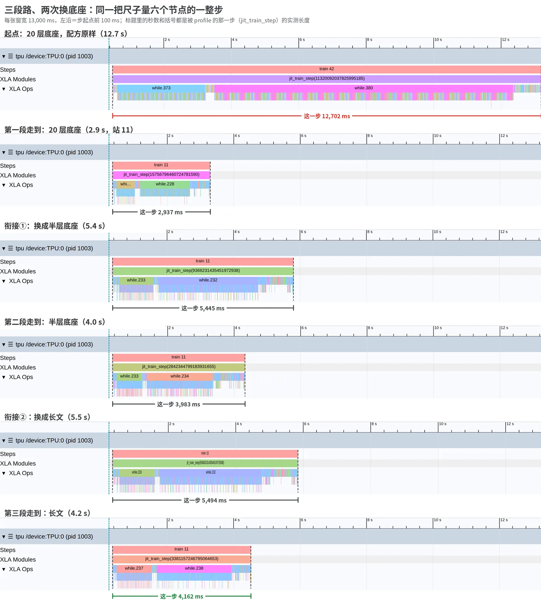
实测：XProf，一颗芯片。图里每段标题和括号都是被录下的那一步，跟编年史里的多步均值略有出入。第一段最后一站没录 profile，图上 2.9 秒那一格是前一站，编年史第一段终点是 2.731 秒。换底座时一步里要算的东西也变了，只比每段自己的起点和终点。
原样跑，主核 59.3% 的时间在等通信（下图：反向一层，等的是专家矩阵乘的 3.9 倍）。专家按 FSDP 切，反向一层光收发专家权重和梯度就约 58 GB，按实测链路速度折成约 310 毫秒，是这一层反向专家矩阵乘 63 毫秒的约 5 倍（本课推导），怎么排都藏不住；加上前向那次收集，每层约 77 GB。改成专家并行（EP，8 组、每组管 32 个专家，组内仍要收齐）、主要挪 token，每层降到约 12 GB（其中专家权重与梯度 9.7）：一刀 −45.4%。
每个设备只存每组专家的一小片。一个 MoE 层 256 个专家的权重合起来约 19.3 GB（256 × 3 块 × 6144 × 2048 × BF16），前向收一次、反向重算再收一次，再加上 FP32 的梯度规约 38.7 GB：每层每个设备约 77.3 GB（按形状推算）。只看反向一层：重收 19.3 ＋ 规约 38.7 ＝ 58 GB，按每设备约 186 GB/s（第六节实测的链路速度，借来估算）折成约 310 毫秒，是这一层反向专家矩阵乘（63 毫秒）的约 5 倍（本课推导：58 ÷ 186 ÷ 0.063）；一步里主核光等专家权重收发就 6,811 毫秒。
改按专家切：专家轴复用上下文并行那 8 份，也就是 64 片的 128 个设备分成 8 组、每组只管 32 个专家（组内仍按 FSDP 切、用前收齐），token 挑中谁就把 token 送过去。每层每设备要收发的从约 77 GB 降到约 12 GB（专家 9.7 ＋ 换来的 token 通信 2.4，按形状推算）。
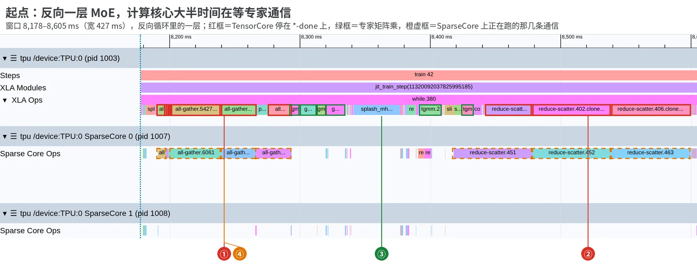
这一层主核等通信 ①＋② ＝ 246.1 毫秒，是算 ③ 的 3.9 倍。图里 TensorCore ＝ 主核，SparseCore ＝ 小核，*-done ＝ 通信的完成点。实测：XProf，站 0 那一格，反向循环里的一层，窗宽 427 毫秒。
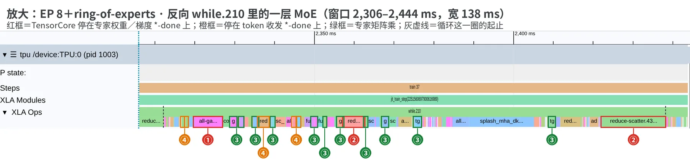
这一层等通信 ①＋②＋④ ＝ 33.7 毫秒（站 0 是 246.1）；一层从约 466 毫秒缩到 126 毫秒。实测：XProf，站 1 那一格，窗宽 138 毫秒（上一张站 0 是 427 毫秒，两张横向比例不同）。
先看等的比算的多多少：多几倍，先减字节。接着搬来已上线的那一包配置（注意力为主，还带先拼后收、规约分层、层调度器等，−29.0%）、换新版分组矩阵乘核（−7.0%）。
| 站 | 看到什么 | 怎么判断的 | 做了什么 | 快了多少（对同作业对照） |
|---|---|---|---|---|
| 0 → 1 | 一步里主核 59.3% 的时间在等通信，大半在等专家权重的收发 | 反向一层等 246.1 毫秒，专家矩阵乘只有 63.3；通信进行的那段时间里，主核上一个计算都没有。专家按 FSDP 切，字节本身太多，怎么排都藏不住（字节账见 3.1 的折叠） | 换切法：专家轴复用上下文并行那 8 份，每个设备只收自己那一份专家（专家字节降到原来的约八分之一），换来的 token 通信约是它的四分之一 | 12.743 → 6.951 秒（−45.4%） |
| 2 | 步时砍掉一半以后，注意力计算仍要约 1,975 毫秒 | 同项目一个较小的模型已经上线、过了数值准入的那套注意力配置，可以直接搬 | 搬过来（存注意力输出、调注意力块大小、免一次重排）＋ 层调度器（编译器里专给通信找搭档计算的一道排程，9.5 细讲） | 6.951 → 4.948 秒（−29.0%，对同作业里站 1 加小核分工那格 6.971 秒）；注意力计算 1,975 → 796 毫秒 |
| 3 | 专家的矩阵乘用的还是旧版核 | 没单独诊断：新版核已经在别处验证过 | 换新版分组矩阵乘核 | 4.948 → 4.601 秒（−7.0%） |
实测（作者私有编年史总表）：站 0 是生产配方原样（专家按 FSDP 切）；同一批里比过两条路：只换更宽的路、不减字节的联合切快 28.8%，减字节的这一刀快 45.4%。每个设备只有 4096 token 时，挪 token 比挪权重便宜一个数量级。
站 2 合了两步：小核分工、token 分两块、先算 top-k（这三项一起开 +0.3%，在噪声内，没单独量过；站 5 时三项打包一起去掉）和那套注意力配置 ＋ 层调度器。
字节降下来以后，通信已经比计算短，剩下的是它排在哪。（试过预取下一层权重：4.948 → 5.388 秒，+8.9%，没采用。）站 4：一条收集放行到完成之间没东西陪它；改成流水（分几块收，收一块就先算这一块），对同作业对照 4.605 秒快 7.5%（下图）。
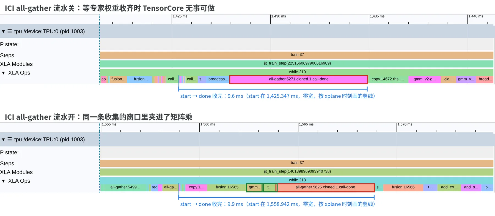
收齐要的时间两边差不多（9.6 对 9.9 毫秒），收益全在重叠。实测：XProf，两张同窗宽 20 毫秒，左沿在这条收集放行前 4 毫秒。
站 7：步尾优化器段露出 651 毫秒，放大是一串同步 all-to-all：Muon 正交化前要把动量换成「每个设备拿整块矩阵」（当时的程序连参数也一起搬，第九节回来讲），原来被编译器拆成沿几个设备轴分三步搬（设备排成一张多维网格，每一维叫一个轴，FSDP 是其中一维）；换个切的顺序，只沿 FSDP 那一个轴搬一步，−11.2%（下图）。
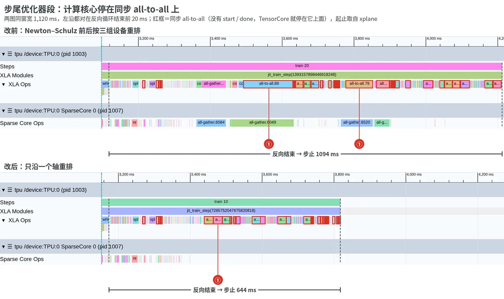
反向结束到一步结束：1094 → 644 毫秒。实测：XProf，两张同窗宽 1120 毫秒，左沿都对在反向循环结束前 20 毫秒。
| 站 | 看到什么 | 怎么判断的 | 做了什么 | 快了多少（对同作业对照） |
|---|---|---|---|---|
| 4 | 第一次录全一步：主核等通信仍占 44%；专家权重收集从放行到完成之间，0 个矩阵乘 | 收集用时正常，只是没有计算陪它 | 专家权重收集流水化 | 4.601 → 4.260 秒（对同作业对照 4.605 是 −7.5%）；中间夹进 2 个矩阵乘，收集用时几乎不变 |
| 5、6 | （照已有方案试的，事先没有单独诊断） | 站 5 的两样（收潜变量、精简配置）单独叠都变慢、一起开才快：收益来自哪段通信能藏到哪段计算底下，不是字节，也不是运算量（推断：由不可加推出，合开那格没拆账） | 上下文并行改成收潜变量（同时精简配置）；整条序列的 K 一次矩阵乘 | 4.260 → 4.101 → 4.021 秒（−3.7%、−2.0%） |
| 7 | 步尾优化器段 906 毫秒，露出 651 毫秒（原样时只露 158） | 放大是三组同步 all-to-all，合计 497 毫秒（截图那一步 498）：Muon 正交化前要把动量换成「每个设备拿整块矩阵」（当时连参数也一起搬），原来的写法被编译器拆成沿几个设备轴分三步搬 | 换一种切的顺序，只沿 FSDP 那一个轴搬一步 | 4.028 → 3.577 秒（−11.2%）；优化器段约 819 → 340 毫秒（906 是站 3 那格；截图按「反向结束到一步结束」量是 1094 → 644） |
实测：站 4 起的「看到什么」来自站 3 那一格第一次录全的一步 profile。站 7 的对照 4.028 秒是同一个窗口（第 5–9 步）重新取的；Muon 在第九节还会再出场一次。
站 8：注意力反向跳块，注意力核少算约 340 毫秒，步时只快 78 毫秒（同一作业里的对照 3.574 秒，下图）。关键路径不在主核。
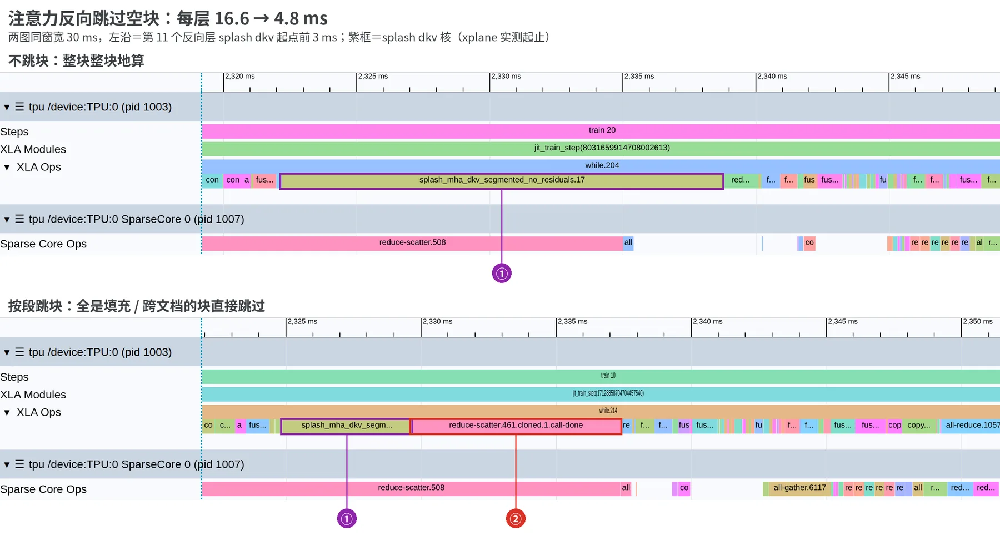
整步只快约 2%：省下的计算原来就盖在一条通信上面。实测：XProf，两张同窗宽 30 毫秒。
小核 0 那条队列被占了步长的 88%，其中 1,203 毫秒是 token 重排的杂活，并非通信；队列满了，通信提前发也没空位。站 8 是第一节那条规矩（不在关键路径上的，省了也白省）在编年史里第一次出现。站 9：把 token 排序挪回主核，−11.3%（下图）。
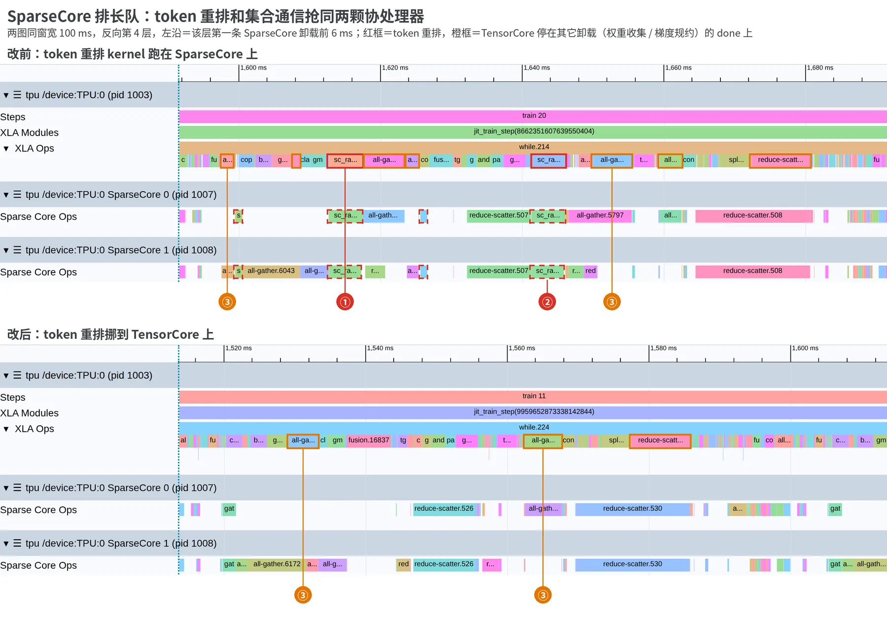
这一站整步快约 11%。实测：XProf，两张同窗宽 100 毫秒，反向某一层。
之后换预打包数据、MoE 缓冲只读写有效行（各 −2 到 −3%）；站 12 拿公开模型（第四节的参照）的 profile 对照，看出主核每层还多等 10 毫秒，差在反向；按差的地方重新分配小核的活、把缓冲压到 4 倍，−7.3%，到 2.731 秒。
| 站 | 看到什么 | 怎么判断的 | 做了什么 | 快了多少（对同作业对照） |
|---|---|---|---|---|
| 8 | 约 4.0 秒那一格，小核 0 被占 3,424 毫秒，占设备一步的 88%；其中 1,203 毫秒不是通信，是 token 重排这类 kernel | 只压主核不见效：注意力反向跳块，注意力核少算约 340 毫秒，步时只快 78 毫秒（同作业对照 3.574 秒）；把通信提前发的调度变换也没用，队列满了，提前也没空位 | 跳块照留，但知道了瓶颈不在主核 | 3.577 → 3.496 秒（对同作业对照 3.574，−2.2%） |
| 9 | 同上 | 完美重叠的下限就是小核 0 那条队列：要从小核上拿走实活 | token 排序挪回主核（缓冲 7.75 倍，溢出的那步整步回放） | 3.496 → 3.100 秒（−11.3%） |
| 10、11 | 数据填充 15.1%（第 5–9 步这几步；第 0–49 步统计是 12.6%，2.2 用的是这个）；主核上的 MoE 胶水按整块缓冲读写 | 第二节：换数据先变分子；胶水按有效行就够 | 换离线预打包数据；MoE 缓冲只读写有效行 | 3.100 → 3.031 → 2.946 秒（−2.4%、−2.9%） |
| 12 | 两颗小核真在执行的只剩 45%、44%，队列不满了；主核每层还停等 20.5 毫秒，参照只有 10.3 | 差距全在反向；单项最大是一个输出投影的权重梯度规约，完成点露出 7.2 毫秒。照搬参照的钉核反而慢 2.1%：另一颗小核还有活 | 按自己的诊断改三处：规约只钉一颗小核、路由权重的累加挪回主核、那个输出投影的权重梯度提前；缓冲压到 4 倍 | 2.946 → 2.731 秒（−7.3%），有效 MFU 12.25% |
实测：站 8 的诊断来自约 4.0 秒那一格逐事件记账（只录了小核 0，小核 1 是推断）。站 12 三处单测 −0.5%、−1.0%、−3.7%，合开 −4.6%；挪回主核那项离线估能省约 0.36 秒，实测只省 0.03 秒：省下的小核时间原本大半藏在主核计算后面（推断）。
站 10 换数据，有效 MFU 从这一站起跳一档（分子 325.18 → 386.56 TFLOP），步时可以接着比。
省下的计算不在关键路径上。那时关键路径是小核 0 那条队列（占满步长的 88%），主核算得再快，也只是换个地方等。把 token 排序挪回主核、给小核减负，才快了 11.3%。
为什么换。换成半层底座：78 层主干留 39 层、视觉塔 40 层留 20 层，再加 MTP 头。半层底座层数减半、切参数的份数也减半，所以每设备的参数和每层的活都跟 128 片全量一样。20 层底座每层的活一样，但每设备参数只有一半，优化器偏轻。
同一份推荐配置量两次：20 层底座 2.731 秒、有效 MFU 12.25%；半层底座 5.476 秒、11.1%。层数从 20 到 39，差不多翻了一倍，又多了视觉塔，步时和分子都跟着变。
从这里起，半层底座只跟半层底座比。
半层底座能代表全量的，只到参数和计算为止；显存不能照搬（第九节有一个例子）。
从半层底座到 128 片全量（78 层），层数 ×2、切参数的份数也 ×2，所以每个设备的参数、优化器状态、每层要算要收的都一样，MFU 和每层时间能代表全量（步时约是半层的 2 倍）。激活不一样：它随「每设备 token × 层数」长，每设备 token 两边相同、层数翻倍，全量要存的激活约是半层的 2 倍（本课推导）。峰值也不在同一段：半层底座的峰值在优化器段，全量的峰值在反向开头的激活上。所以凡是多存激活的配置，都要在全量规模上单独离线编一次（第九节有一个例子）。
到了半层底座，先别急着砍：有效 MFU 11% 是高还是低？下一节找个参照比一比。
衔接①之后 · 半层底座起点 5.476 秒 · 不改配置，先找参照（站 12 借过它的 profile）
要找参照，而且要在同样的条件下比。
参照选公开的 DeepSeek V3：上游公开仓库里一份 v7x 的配方报 48.85%。我们先在自己的 64 片 v7x 上照它复现，调了两个开关以后 4.133 秒，追平并超过它报的数。然后每次只改一个条件、往我们这边退。
在我们的环境里原样跑是 5.473 秒；关掉一个叫 BF16 中间结果传播的编译选项（上游 16K 配方里是关着的，跟下面「FP8 换 BF16」不是一回事）降到 4.198 秒；再把一项流水线内存开关设成上游 C4 配方的取值，到 4.133 秒。原样跑和它报的差这么多，原因还没定位。
📌 实测：每一行前后两格的步时：FP8 → BF16 4.198 → 5.631 秒；上游专用实现 → 通用实现 1.149 → 1.712 秒；序列 4K → 32K，加上下文并行 8 1.712 → 2.418 秒；加 FP32 精度开关（几处中间结果按 32 位算） 2.418 → 2.682 秒；AdamW → Muon 2.418 → 2.869 秒。
📌 公开锚点：上游 MaxText 公开仓库一个分支里 DeepSeek V3 专用实现的 README：v7x、全量 FP8、序列 8192、C4 数据，稳态 4.24 秒、48.85%（它自己的 MFU 口径，分母按 BF16 峰值）。
📌 实测（本课程作者，同样 64 片 v7x，合成数据）：上游 8K 配方原样跑 5.473 秒；关掉 BF16 中间结果传播（上游 16K 配方里用的开关）4.198 秒；再把一项流水线内存开关设成上游 C4 配方的取值 4.133 秒（同口径 50.15%，比 README 快 2.5%）。FP8 → BF16 那一步从 4.198 秒那格起。
⚠️ 原样跑比 README 慢约 29%：主核停在小核上手动打包的通信包上 1.12 秒；关掉 BF16 中间结果传播后降到约 0.1 秒（实测）；为什么开着它就排不开，推断是显存余量太小。
📌 实测：后四步在 DeepSeek V3 截成 16 层的格子上量（每设备 4096 token）：专用实现 1.149 → 通用实现 1.712 → 序列 32K ＋ 上下文并行 8 是 2.418；FP32 开关和 Muon 各自单加在 2.418 那格上。
⚠️ 每设备 token 从 8192 减半那一步没画：它改的是每步的活，不是条件的代价（MFU 35.98% → 26.06%）。
⚠️ 推导：五项（各取两位小数）相乘 3.72；各项是在不同的格子上量的，相乘假设互不影响，只作量级示意。
五步相乘约 3.7 倍。差距几乎全在条件上：精度（两步）、实现、序列长度、优化器；其中「实现」那 ×1.49 里七成是那一格没开的配置（下面的折叠）。
每一行是在自己那一格上单独量的（第一行在 61 层、序列 8K 的格子上，后四行截到 16 层），所以行与行的秒数不接续，只看倍数；第一行从 4.198 秒那一格起（还没改那项内存开关）。也别拿 49% 对 11% 去跟 3.7 倍对账：每退一步，分子也跟着变（序列变长、注意力变多），MFU 的比和步时的比不是一回事。
最大的一刀「专用实现换成通用实现」（×1.49）要打个折。逐算子拆开，这一刀多出来的 561 毫秒里，约 399 毫秒（七成）是那一格的通用实现自己没开几项 MoE 优化：矩阵乘的分块、两份权重拼成一个核、路由权重的乘法挪位置、token 重排不按最坏缓冲整块读写、两份梯度在缓冲上相加。这些我们的配置早就开了。剩下约 162 毫秒才是两种实现真正的差（本课推导：561 − 399）。连参照自己的配置也要先对齐，再说谁的实现慢。
| 项 | 毫秒 | 我们的配置里 |
|---|---|---|
| 矩阵乘分块（默认分块 vs 大分块）与两份权重拼成一个核 | 133 | 有等价物：启发式分块、权重拼核 |
| 路由权重在整块缓冲上做 FP32 乘法 | 120 | 有等价物：乘法挪到激活上、挪回主核 |
| token 重排按 7.75 倍最坏缓冲整块读写 | 100 | 大半有：主核排序、只读写有效行、4 倍缓冲加整步兜底 |
| 两份梯度在缓冲上相加 | 46 | 拼核以后这一步几乎没了 |
| 激活函数没有只算有效行的专用核 | 53 | 没有（真差；后来试过，短文 −1.3%、长文持平，未采用） |
| 专家权重转置拷贝 | 75 | 试过没成（真差） |
| 注意力投影的融合核与块配置 | 78 | 没搬：要求序列不切，跟上下文并行冲突（真差） |
| 零碎（广播、切片、排序） | 28 | — |
| 等待异步通信、同步集合 | −26、−34 | 这两项我们反而少（参照那边有手动打包的通信要等） |
各项相加 573，对上实测的 561（差 12，误差内）。配置四项之外的部分按实测总差算约 162 毫秒（本课推导：561 − 399；按表里逐项加是 174）。前四项的毫秒是在 DeepSeek V3 那一格上量的，搬到本讲模型上各自还剩多少没逐项量（推断：大半已经拿回）。
阶梯是一步一步乘出来的。更直接的办法：把 DeepSeek V3 的结构放进我们的全部条件，跟本讲的模型同代码、同开关地跑。
| 形态 | DeepSeek V3 | 本讲的模型 | |
|---|---|---|---|
| 20 层底座 | 3.019 秒，有效 11.11% | 2.731 秒，有效 12.25% | 本讲的模型快 9.5% |
| 半层底座 | 5.842 秒，有效 10.30% | 5.470 秒，有效 11.11% | 本讲的模型快 6.4% |
实测：DeepSeek V3 的结构叠满本讲模型的全部条件：同一份代码、同一套开关、序列 32K ＋ 上下文并行 8、每设备 4096 token、同一批真实文档，64 片 v7x。两边的有效分子是同一个计数函数，没有混用口径。
本讲模型半层底座那格 5.470 秒是这一组同条件对照自己的读数，跟衔接①的 5.476 秒是两个作业。
配置逐项比过，只有 3 个非结构差异（一边的矩阵乘分块启发式、softmax 缩放的精度、路由是否屏蔽填充）；数据管线不同：DeepSeek V3 没有视觉塔，走文本打包。
公开模型反而慢。那本讲的模型有没有自己多花的地方？有，看下图。
推断：「其余」是总差减出来的，混了第 11 步 profile 和第 5–9 步均值两个窗口；多步平均是本讲模型快；单看第 11 步，两边设备步只差十几毫秒。
📌 实测：两边同一份代码、同一套开关，只有 3 个非结构差异（一边的矩阵乘分块启发式、softmax 缩放的精度、路由是否屏蔽填充）和数据管线不同；同一步 profile 按类别逐项相减。
⚠️ 推断：两份 profile 都只录了一颗芯片，而两边这颗芯片一个是注意力最重的设备、一个是轻的（下一张图），所以按最重的设备修正；修正后的数都是估计。
📌 注意力那一项：本讲模型的预打包数据 13 步里 11 步有一行接近满长的文档，最忙的设备算 66 个子块（平均约 60）；对方的文本数据平均约 50。这是数据，不是核（第五节从这里接着查）。
先交代：上面那张账是修正以后的。第一次算出来不是这样：注意力那一项曾经读成「本讲模型的注意力核每单位运算慢 2.3 倍」。
📌 实测：两份 profile 都是进程 0 的设备 0（它对应第 0 行、上下文并行的第 0 段，是按切分规则推断的，证据较强）。用 CPU 按同一步的真实分段重放、按注意力核的剪块规则逐块数：本讲模型这颗芯片 66 个子块（那一行是一整篇 32K 文档），对方这颗 8 个，对方那一步最忙的设备 46 个；每设备满因果是 66 个（1024 × 1024 子块；一整篇 32K 文档就是满因果）。
📌 实测：前向每次 9.31 对 2.37 ms；每个子块前向 68.7 对 85.9 GFLOP（两边头数、头维不同），折算 487 对 290 万亿次/秒，本讲模型约是对方的 1.7 倍。
📌 实测：单芯片单测用同一组分段、按实际执行的块算，本讲模型的形状比 DeepSeek V3 的形状快 1.4–1.6 倍，并且复现了 profile 里的耗时。
注意力的活随数据在设备之间分得不匀；所有设备每层要对一次账，大家等的是最慢的那一个。所以拿到一颗芯片的 profile，先数活，再问它是不是最忙的那颗。
两份 profile 都只录了进程 0 的设备 0。我们拿这颗芯片注意力的耗时，去除全步平均的有用运算量，得到「每单位运算慢 2.3 倍」。可这颗芯片那一步正好分到一整篇 32K 文档，算 66 个子块；对方那颗只有 8 个。分母应该用这颗芯片自己执行的运算量：每个子块前向本讲模型 68.7 GFLOP、对方 85.9（两边头数、头维不同），按各自执行的块折算是 487 对 290 万亿次/秒。改过来以后，结论反过来，单芯片单测也证实了。
| 改动 | 放到 DeepSeek V3 上 | 放到本讲的模型上 |
|---|---|---|
| 本讲模型调好的整套运行库开关 | 慢 1.7% | （它本来就在用） |
| 关掉 BF16 中间结果传播 | 快 23% | 慢 1.6%（20 层底座） |
实测：前一行在参照阶梯起点那一格上测；后一行两边各自同分配对照。
实测：原样跑时主核停在小核上那些手动打包的逐层集合通信包上共 1.12 秒，关掉 BF16 中间结果传播后降到约 0.1 秒，离线峰值 89.56 → 82.67 GiB；机理（推断）：显存余量大了，这些包能提前发；本讲的模型没有这种包，关 BF16 中间结果传播只剩代价。要借的是思路（逐层打包、按车道分工、提前一层发），不是开关。
不能。先数这颗芯片这一步算了多少块：我们 66 个，对方 8 个；按块折算我们反而快（约 1.7 倍）。再看关键路径上最忙的是谁：对方那一步最忙的设备算了 46 个块，没被录到。
多花的里有一项不怪核，怪数据：长文档让最忙的设备多算了很多块。那把长文档滤掉，注意力省下来，步时能快多少？
| 站 | 计入编年史的改动 | 对上一站 | 在哪讲 |
|---|---|---|---|
| 13 | 数据滤掉长文档 | −2.7% | 第五节 |
| 14 | 少搬字节（改了精度，第六节讲） | −16.9% | 第六节 |
| 15 | 三样改排法、改存什么的改动（第七节讲） | −6.0% | 第七节 |
| 16 | 收集限 2 条在飞＋两类通信分开排队（第六节讲） | −2.4%（两项合开、叠在站 15 上跨作业量） | 第六节 6.4 讲，第七节末计入 |
作者私有编年史总表；中间穿插的单项读数（例如 7.1 屏障单独 −6.9%、6.4 限 2 条在飞＋分两颗小核 −3.1%）是旁证，不是站。
5.476 秒：衔接①，同一份推荐配置放到半层底座的第一次读数。5.448 → 5.300 秒：站 13 自己那个作业里，滤长文档前后的对照和改后。5.311 秒：另一个作业重跑滤完以后那份配置，第一节的解剖样本、第七节屏障的对照都用它（跟 5.300 差在跨作业尺子以内）。比收益时一律用同一个作业里的那一对。
站 13 · 数据滤掉长文档（再行内重排） · 5.448 → 5.300 秒（同作业 −2.7%）
第四节查到：最忙的设备常常分到一整篇接近满长的文档。
| 原数据 | 滤掉超过 8K 的文档 | |
|---|---|---|
| 最忙设备的子块数（每步） | 平均 59.5 | 13–18 |
| 按块数推，本该省 | — | 约 578 毫秒（推断） |
| 实测步时（同一分配） | 5.448 秒 | 5.3 秒（−148 毫秒） |
| MoE 所需缓冲倍数最大值（排除「MoE 变得更不均、别处变慢」） | 1.27–2.30 | 1.26–1.41（更均衡，没变差） |
实测：同一个作业里两格，第 12–19 步；两份数据都是真实图文、离线预打包，第二份把超过 8192 token 的文档（全是纯文本）滤掉，再行内重排。另一件事不要混：在预打包数据上单独测行内重排只快约 1.7%，没进推荐配置。子块数由同一批数据在 CPU 上重放、按注意力核的剪块规则数出来，和日志里的配对占比逐位一致。
推断：「本该省」按最忙设备每个子块的实测耗时（前向 ＋ 反向）乘层数估算，是上限。
按省下的块数推，本该快五百多毫秒；实际只快了 148 毫秒。剩下的去哪了？
从这里往后，所有改动都在这份滤掉长文档的数据上比（几个对照各是哪一格，见本节开头的折叠）。
两个数别混：578 是滤数据前按块数推的「该省」；下面的 672 是同一份配置里一重一轻两颗芯片的注意力差，量的是另一件事，用来看省下的时间去哪了。
同一个配置挑两颗芯片：一颗这一步注意力最重，一颗很轻（7 个子块，比滤完以后最忙的设备 13–18 个还轻，只当「滤完以后」的近似，推断）。看它们的一步里时间怎么分。
📌 实测：同一配置、原数据。最忙的那份是第 11 步、这颗芯片正好是这一步注意力最重的设备（66 个子块）；轻的那份是另一个作业的第 20 步、这颗芯片只有 7 个子块。各段是主核叶子算子的自身时间按类别加总。
⚠️ 推断：两份不是同一步，只当量级；一步 5444.7 与 5249.7 ms 里「其余」是减出来的。小核的忙时两份一样（小核 0 约 26%、小核 1 约 42%）。多芯片同一步的 profile 已取回，待拆来坐实。
轻的那颗注意力少了约 672 毫秒，可它在等专家权重通信上多花了 541 毫秒。小核上的活两颗一样多。最重的那颗也等了 518 毫秒：这条链本来就有一截露在外面；多出来的 541，才是原来被注意力盖住、现在露出来的那截。
先算一道小账（第一节 1.4 留过这道题）。两件事同时干，一轮花的是长的那件，不是两件加起来：
⚠️ 示意：分钟数是为好算编的，不是本课的测量。
📌 对应本课：师傅那条是注意力（省约 672 ms），小工那条是专家权重的收集与梯度规约（露出 541 ms），兑现约 130 ms（5.2）；轻的那颗一步短了 195 ms，比 130 多的那 60 来毫秒落在别处（两颗不是同一步，只对量级）。
⚠️ 示意：长度不按比例；一层里实际还有很多段计算和通信，这里只画注意力和专家权重那条链。最重的芯片本来也有一截露在外面（fig-heavylight 里的 518 ms），图上只画原来被注意力盖住、后来露出来的那一截。
📌 对上实测的量级：注意力省约 672 ms、等待多 541 ms，净约 130 ms；日志步时实际快 148 ms（本课推导：两个数不是同一个口径，只对量级）。
每一层小核都要收专家权重、规约专家梯度。重的芯片，注意力比这条链长，链大半被盖住；注意力一变短，主核算完就得等链。省下的注意力只有超出这条链的那一截能兑现：672 − 541，约 130 毫秒，跟实测的 148 同一量级（这是账面拆分，不是预测）（图上整步差 195 的那六十来毫秒见图出处）。
这条链就是现在的关键路径。不先把它变短，再砍注意力、再砍别的计算，主核都只是换个地方等。
同一个项目里另一个较小的模型：按样本跳过注意力块，注意力省了 1087 毫秒，一步只省 39 毫秒，多出来的几乎全是露出的通信。本讲的模型更早一档（小核的队列塞满的时候）：注意力反向跳块，注意力核少算约 340 毫秒，步时只快 78 毫秒。三次的共同点：被砍的那段计算，原来盖着一条不随它变短的通信。
在 20 层底座上，从基线到现在，关键路径换过三类：先是通信的字节量（站 1，−45.4%）；然后是小核的队列（站 9，−11.3%）；现在是通信排在哪、能不能跟计算重叠（第六、七节）。每砍掉一个，下一个就露出来。
本课推导：字节按每层专家权重两次收集加 FP32 梯度规约的形状估算。
几乎不快。现在主核在等专家权重那条链，注意力已经比它短了；再砍注意力，主核只是多等一会儿。要先把那条链变短或者藏起来（第六节）。
回看：这一节的调查线（每一步只看一个数）
关键路径找到了：每层专家权重的收集和梯度规约。下一节就砍它。可它为什么这么长，能不能缩？
站 14 · 梯度 BF16 ＋ 两条运行库开关 · 5.311 → 4.413 秒（−16.9%；对照 5.311 秒，各对照是哪一格见第五节开头的折叠）
先量这条链本身的速度。
先猜一个最自然的原因：小核不够用？把同一类通信按字节和耗时画出来：
实测：五种组合各自一条集合通信的每设备实收字节与单次耗时（profile 第 11 步），折合 186、187、186、186、185 GB/s。
实测：这两类通信只走 3D 环面的两个轴（每轴正反两条；编译产物里的环配置）；一颗芯片两个设备同时各收各的。
实测：让专家权重收集也用两颗小核，同一常驻作业、不同分配（跨分配噪声约 ±0.2%）里 4.415 → 4.467 秒（第 5–9 步），慢 1.2%；每条收集没有变快，反而多占一条队列。
📌 公开规格：每芯片 6 条 ICI 链路，每条双向 200 GB/s（Google Cloud TPU7x 文档）。⚠️ 本课推导：每方向约 100 GB/s；并行度按配置是上下文并行 8（显式）× FSDP 16（128 ÷ 8 自动填满），专家并行复用上下文并行那一维；按这两类通信走 3D 环面的两个轴共 4 条算（环面轴的具体映射未核），入向约 400 GB/s；一颗芯片两个设备合计约 372 GB/s，到九成多。一颗芯片里两块计算晶粒怎么分这几条链路官方没公开，所以这个对比只对量级；「卡在链路上」也是由此推断。
收集和规约、FP32 和 BF16、一颗小核和两颗小核，全落在同一条线上：每设备约 186 GB/s。这条链不卡在小核个数上（实测），最可能卡在芯片之间的链路带宽上（约为芯片间链路入向上限的九成多，折算见图出处；推断）；两颗小核一起收反而慢 1.2%。要缩它，只能少搬字节；把两份权重拼成一趟收也不省链路时间。
专家梯度原来按 FP32 规约。改成 BF16，字节减半；再加上公开配方里的两条运行库开关（开关甲、开关乙，都是让编译器排通信更自由）。三样合开：5.311 → 4.413 秒，快 16.9%。
这里说的「梯度 BF16」，实际是 12 处精度写法一起切成 BF16，梯度整体 BF16 是其中一处；站 25–27 又把其中 9 处改回参考写法，留下梯度整体、专家权重梯度、路由梯度三处。只切梯度整体那一处，在长文起点上是 −4.6%（跨作业）；定稿之后的配置上把它改回只慢 0.8%，两格配置不同，原因没拆。
实测：同一个作业，对照 5.311 秒 → 合开 4.413 秒（−16.9%）；profile 第 11 步，反向各层逐层切开取中位数。
实测：代价是两份专家权重改在运行时拼接，主核多算约 197.5 ms（一步的账里，已经算在「在算」那一侧）。
📌 小核 0 变忙、小核 1 变闲：梯度规约不再固定在小核 1 上，改由编译器分给两颗；但它变快靠的是字节减半（上一张图），不是两颗一起跑。
反向每层（各层中位数）从 79.7 毫秒缩到 58.4 毫秒，主核的计算几乎没变（50.2 → 49.9），少的全是等：每层 29.5 → 8.5 毫秒；整步合起来，反向段主核等通信从 1127.3 降到 247.1 毫秒。
改完以后，专家梯度规约从固定在小核 1 上，变成编译器分给两颗小核同时跑，每层墙钟也正好减半。于是我们先写成了「两颗小核并行，所以快一倍」。后来把五种组合放在一张图上（6.1），单核双核的速度一模一样：减半全是因为字节减半。解释听着越顺，越要换一个配置量一下。
| 改动的性质 | 例子 | 上线前要过什么 |
|---|---|---|
| 只改求和顺序、融合、分块、调度、通信方式 | 两个开关、分核 | 两道轻检查：离线扫一遍被省掉的舍入；短跑结果在噪声尺子以内（有 GPU 参照用 GPU 重跑的差；没有时用只改执行方式的副本当尺子，第十节） |
| 改了精度或算法 | 梯度从 FP32 改 BF16 | 回到对齐流程（专题八），单独标出、单独批 |
这次调优的规矩：性能优化只要不改算法，末位不一样是必然的，不要求逐位，也不重新对齐 GPU；改了精度的不算单纯的性能项。
两道轻检查具体怎么做、先要排除什么（同一份程序自己跑两次就不一样、两边初始权重不同），第十节讲。
回头看这三样（梯度 BF16、开关甲、开关乙）：在原数据上单测，梯度 BF16 快 6.5%，那组 8 条开关合起来快 5.7%（生效的是其中两条，见 2.3；在原数据上只合起来量过），相加约 12%；合开却快了 16.9%。打在同一条链上，合起来就超可加？先别急着下结论。
实测：两个单项 −6.5%、−5.7% 是在原数据上测的；合开 −16.9% 是在滤掉长文档的数据上测的。另一组不含精度改动的改动（对照 5.313）三个单项按相乘推出 4.778（本课推导，不是实测），实测 4.745，比推的再快约 0.7%；单项和合开不在同一个作业，这点差不当作协同的证据（原因没查）。
实测：在新数据上重测梯度 BF16 单项：5.308 → 4.650 秒（另一个作业，对照与本作业对照差 0.003 秒，在跨作业尺子 0.018 秒以内）。
📌 为什么旧数据上量小了：原数据上最忙设备的注意力很长，把专家梯度那条链大半盖住了，等它的时间只有 153 ms；新数据上露出来 500 ms，砍它就砍得多（梯度 BF16 单项省得比这还多，多出的部分没拆账）。
⚠️ 本课推导：相乘那一行 ＝ 5.311 × (4.650 ÷ 5.308) × (1 − 开关甲 2.7%) × (1 − 开关乙 4.1%) ＝ 4.341（4.650 ÷ 5.308 是梯度 BF16 在新数据上的单测；开关甲、乙是那两条开关在新数据上各自的单测）；相加那一行 ＝ 5.311 × (1 − 12.2%)；旧数据相乘那一行 ＝ 5.311 × (1 − 6.5%) × (1 − 5.7%)。
两个单项量在原数据上，合开量在滤掉长文档的数据上。原数据上注意力很长，把这条链大半盖住了（第五节），砍链的改动在那里量出来必然偏小。
在新数据上重测梯度 BF16：单项就有 12.4%。
两刀打在同一条链上，没有协同时该按相乘推，不是相加：第一刀砍掉一截，第二刀只能在剩下的那截上再砍一个比例。拿同一份数据的单项相乘推，一步该到 4.341 秒；实测 4.413 秒，比推的还慢一点，没有超可加。
「一加一大于二」多半是口径：先查两个单项和合开，是不是同一份数据、同一批机器、同一个窗口量的。
在现在的切法下，再少搬字节就都要改精度了。不改精度，能做的是藏。
这条链一步在小核上跑约 1.39 秒，比主核一整步的计算短得多，原理上能全藏住；可砍完站 14 那一刀，它还露出 0.38 秒。这 0.38 秒没再拆账，盖不住和排队两种原因都有；这一节只处理排队：它跟 token 的收发挤在同一颗小核的一条队里，排在后面就晚到了。
实测（改之前）：前向每层中位数，小核 0 忙 18.57 ms（专家权重收集 12.18、token 4.20、其它 2.18），主核计算 18.65 ms；小核 1 只忙 0.59 ms。
实测：整步看，专家权重那条链在小核上一共 1389 ms，主核等它露出 381 ms；token 走另一个方向的链路，跟权重的两类通信不抢道。
实测：在同时在飞的异步收集限 2 条（单开 −2.2%）的基础上，再用两个现成开关把 token 钉到小核 0、让编译器把专家权重收集排到小核 1，两项合起来 4.415 → 4.280 秒（−3.1%；分小核这一步约 −0.9%）；离线比过编译产物，只动了排布和核号，求和顺序不变。
⚠️ 示意：左边小核 0 的段是按忙时拼的，实际顺序更碎；右边改之后的忙时没有逐层量，按改之前的分项画。
同时在飞的异步收集限 2 条（不只专家权重收集；单开 −2.2%），再把两类通信分给两颗小核各排一队（不是两颗一起收同一条），合起来在站 14 上快 3.1%（同一常驻作业、不同分配）；叠到站 15 上跨作业量是 −2.4%，编年史按后者记（站 16）。
不能。单核双核每设备都是约 186 GB/s，不卡在小核个数上（最可能卡在芯片之间的链路，推断）；实测两颗小核一起收反而慢 1.2%。要么少搬字节（改精度），要么别让它跟别的通信排在一条队列里（限 2 条在飞＋分两颗小核，合起来快 3.1%）。
链本身藏得住。下一节看另一类等。
站 15 · 屏障、all-to-all 交给小核、MoE 分支输出不重算 · 4.410 → 4.147 秒（同作业 −6.0%，对照是同作业重编的站 14）
还有一类等跟链长无关：活一样多，调度器把通信排在哪，决定主核等不等。
在优化器之前加一道屏障，告诉编译器：优化器那段的通信，别往前挪。不改任何数值。一步从 5.311 秒到 4.946 秒（单独量，对照是另一个作业里同配置的 5.311 秒，跨作业；站 15 是三样叠在一起）。
实测：对照来自另一个作业的同配置（5.311 秒），加屏障 4.946 秒（−6.9%）；两份前向循环一样长，说明两次分配的硬件速度一样，跨作业比可以用。
实测：前向之前那 66 ms 是同一件事的另一半：被提前的几条优化器收集原来挡在前向之前，加屏障后挪进优化器段。
显存：加屏障后正常步峰值少约 3 GiB；腾出来的空间还让另一处 all-to-all 能交给小核（只多兑现 64 ms，见下面的小表）。
快的几乎全在反向循环：2950 → 2599 毫秒，每层 79.7 → 70.3 毫秒。可反向循环里小核的活一点没少（小核 1 忙 1935.7 对 1936.0 毫秒），主核的计算也没少。少的是等。
回忆第一节的括号：放行到完成点之间夹着的主核计算，夹得越多越藏得住；括号太短，主核就停在完成点上等。
第一节那条第 6.1 毫秒就让主核停下的专家梯度规约也是这一类：结果到优化器才用，完成点却排得很早。完成点排在哪，是调度器在显存和重叠之间权衡出来的（推断），下面就是一个看得见的例子。
实测（编译产物）：没有屏障时，一次优化器参数收集的结果（7.125 GiB）在前向循环之前就产出，直到优化器段的更新才用；反向循环之前产出、之后才用的数据合计 48.26 → 42.23 GiB（−6.0），那一块在加屏障后的清单里不见了。
实测（编译产物）：同一个反向循环体，每条小核异步通信从放行到完成之间夹的融合计算和核合计 801 → 1261 个；空括号 18 → 1 条。
实测（profile 第 11 步）：反向每层 79.7 → 70.3 ms；反向窗口里小核 1 忙 1935.7 → 1936.0 ms，主核计算基本不变（±30 ms）。屏障只改调度，不改数值。
⚠️ 推断：调度器给反向循环排序时显存余量更紧，不敢把异步通信拉长（拉长要多扛住输出的缓冲），于是主核停在完成点上；只核了两头（跨反向占着的数据少约 6 GiB、括号变短），没读调度器源码。
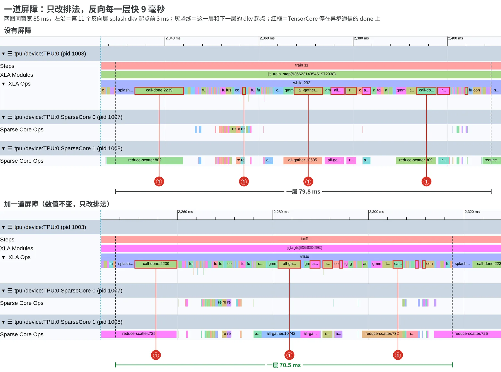
实测：XProf，两张同窗宽 85 毫秒，反向同一层（单层读数，跟正文里各层中位数 79.7 → 70.3 略有出入）。
没有屏障时，优化器要用的一次参数收集被提前到前向之前，收进来的 7.1 GiB 一路占到优化器段；加了屏障，它挪回优化器段，反向循环里各条通信括号里夹的计算合计从 801 个变成 1261 个。调度器在紧的显存余量下不敢把通信拉长（推断）。
那次收集不依赖任何梯度，调度器很「勤快」，就把它提前了，整个反向都占着这块显存。加了屏障，跨过反向一直占着的数据少了约 6 GiB（峰值少约 3 GiB）。括号拉得越长，通信的输出就要在显存里占得越久；显存紧，调度器就不敢拉长括号，主核就停在完成点上（推断）。
提前做，不一定是好事：它会占着显存，反过来挤掉别处的重叠。
反过来的例子：把 iHC（4 路残差流在层间的混合，本讲模型特有的结构）那几步融成一颗核，这一摊计算每步省约 183 毫秒，一步却从 5.313 秒变成 5.420 秒，慢了约 107 毫秒。
实测（编译产物与 profile，同一分配两格）：对照里这条梯度规约放行到完成之间夹 42 条指令（含注意力反向核）；开核以后只夹融合核 1 条，每层等待 10.1 → 16.0 ms，各层合计约 +217 ms；前向一条权重收集的完成点排到矩阵乘前面，约 +55 ms；同步 all-reduce 多等约 +28 ms。
实测：核本身是真核（编译产物里是自定义调用，没有退化成循环），这一摊计算加布局重排每步少约 183 ms；小核两条车道的总活没变。
实测：同一颗核在 20 层底座上是误差内（-0.2%）：换了条件，结论就要重测。调块大小、只开一半推断也救不回来（没上卡测）；要改的是调度，不是核。
核快不快之前，先看它周围的通信排到哪去了。换了条件，这颗核的结论也要重测。
核对调度器来说是不透明的一整块，只能按估的耗时去排。开核以后，调度器把一条专家梯度规约的完成点，从注意力反向之后提到了它之前；原来盖着这条通信的那个大核被挪走了，每层等 10.1 → 16.0 毫秒，各层合计多露约 217 毫秒；前向一条收集、一次同步再多等约 55 和 28 毫秒，合起来约 300，比核省下的 183 多出一百来毫秒。同一颗核在 20 层底座上是误差内。
三个例子是同一句话：先看完成点排在哪，再决定提前、限流还是分队。
| 改动 | 省了什么 | 一步变化 | 为什么 |
|---|---|---|---|
| iHC 里 MoE 分支的输出存下来、反向不再重算 | 主核计算约 116 毫秒，token 规约的等待约 136 毫秒 | 5.311 → 5.12 秒（−3.6%） | 兑现的是 token 规约那段等待；专家权重那条链没短（＋6 毫秒），所以只拿到一部分。代价：每层多存一份，峰值显存 ＋1.7 GiB；64 片跑全部 78 层放不下（96.67 ＞ 94.74 GiB），半层底座放得下，站 15 起一直带着 |
| 把每步约 347.6 毫秒的 all-to-all 从主核交给小核（新版本运行库默认把它留在主核上同步跑，第八节讲） | 主核上那 347.6 毫秒同步通信 | 只少 64 毫秒（−1.3%，叠在屏障之上量的；不加屏障放不下） | 主核还得等小核做完（187 毫秒）；小核跑它要 361 毫秒，不比主核快；不再同步跑 347.6、仍要等小核 187，净该少约 160 毫秒，实测只少 64：差的约 100 推断是这批通信跟专家权重收集、同步 all-reduce 抢链路；挪地方不等于省 |
| 限制同时在飞的通信条数 | — | 4.882 → 5.059 秒（＋3.6%） | 反向循环里括号夹的计算 1261 → 620：括号被压短，通信又露出来 |
实测：三行各自同一个作业里的对照；MoE 分支输出那一行叠在第六节最好那一格上又快 3.7%（4.418 → 4.256 秒）。
all-to-all 那一行要先加屏障才放得下：不加屏障时强交给小核，调度器把这批通信提前进反向，峰值多 8.1 GiB；加了屏障它们留在优化器段。
限制全部异步通信同时在飞的条数，括号被压短，反而变慢；站 16 那一招限的是同时在飞的异步收集条数（2 条，不只专家权重收集），而且同时让 token 和专家权重各走一颗小核（6.4）。
站 16 · 6.4 那一招叠在站 15 上：两类通信分两颗小核排队，同时在飞的异步收集限 2 条（不只专家权重收集） · 4.147 → 4.049 秒（跨作业 −2.4%）· 短文段到头，有效 MFU 14.37%
因为排法变了。没有屏障时一块 7.1 GiB 的数据被提前收进来、占着显存活过整个反向，反向循环只能排得很紧，通信括号里塞不进计算，主核停着等（这一步是推断）；加了屏障，这块数据挪回优化器段，反向的通信能叠在计算底下，主核等得少了。
回看：这一节的主案子（每一步只看一个数）
调度器的一个排法就能左右 7%。而调度器、编译器、运行库本身，也会随着版本变。
旁线 · 不是一站：一路上换版本、复现参照时撞到的；讲完回到编年史的站 17
前面每一刀都默认一件事：同一份代码，编出来的程序是固定的。这一节把这个假设拿掉：编译器和运行库一换版本，同一份配方就可能慢一成多，默认的排法也会变。
先撞上的一个跟版本无关的坑 复现一份参照配方慢了 25%，代码一行没错
| 第一次复现 | 修好以后 | |
|---|---|---|
| 步时 | 1.68 秒 | 1.346 秒（对上原报告） |
| 那颗自定义核在编译产物里 | 一个 96 趟的循环（解释模式） | 一个真正的核 |
实测：那份代码按「当前的后端是不是 TPU」决定这颗核走不走解释模式。离线编译在 CPU 机器上跑，后端是 CPU，于是编出来的是解释循环；原作者在卡上现编，所以没事。改成按目标设备判断，一行。
实测：本讲模型自己的离线产物逐个核过：注意力、专家矩阵乘、排序这些核在编译产物里都真正编成了 kernel，没有退化成循环。
复现一份参照配方（不是本讲的模型）时，只换软件镜像（编译器和运行库），配方、代码、开关一个不动：一步从 1.346 秒变成 1.517 秒，慢 12.7%。差在小核上的一个 kernel，每次慢到原来的三倍多。单独拿出来新旧各离线编一次：
实测（离线单核对比）：0.0.46 对 0.0.53.1，热循环每趟 39 → 202 个指令包；新版本不再对这个循环做软件流水，循环里不变的量也不再提到循环外（从指令排布判断）。
实测（profile）：这颗核每次执行 1.68 → 5.39 ms；主核等它 22.0 → 132.2 ms；同一份配方一步 1329.4 → 1499.5 ms。
实测（离线单核编译）：这是 SparseCore 上做 ragged gather-reduce 的核；代码里只改一行，给热循环展开 8 次，每个元素的计算不变。新版本上每次向量乘摊到的指令包 12.62 → 2.47，旧版本展开后 2.44、原样 2.60。
本讲的模型正常训练步不用这颗核（走主核上的排序），只有 token 溢出、整步回放的那一步会用到。
0.0.46 对 0.0.53.1：这个热循环每跑一趟，从 39 个指令包变成 202 个，长了约五倍；代码里展开 8 次，在新版本上编回了旧水平。
新版本不再对这个热循环（核里反复跑的那个循环）做软件流水（前一件还没做完、后一件已经开工的那种排法），循环里不变的量也不再提到循环外（从指令排布判断）。手动展开 8 次以后，每个元素的计算不变。
实测（离线编译产物逐条数）：大头是优化器给专家权重换排布的那几块；第四行的屏障就是第七节那一道。块的位置和长短是示意。
| 放在哪 | 代价 | |
|---|---|---|
| 旧版本运行库（0.0.49） | 全部交给小核 | — |
| 新版本运行库（默认） | 全部在主核上同步跑 | 每步约 350 毫秒 |
| 新版本，强行交给小核 | 全部交给小核 | 峰值显存多 8.1 GiB：调度器把这批通信提前到了反向里，放不下 |
| 新版本，强行交给小核 ＋ 优化器前一道屏障 | 全部交给小核 | 峰值反而少约 2 GiB；步时只多兑现 64 毫秒（第七节） |
实测（离线编译产物逐条数）：大头是优化器给专家权重换排布的那几块。版本一换，默认放的位置就变了，配置里一个字没改。
没人改配置，换了个版本，每步多出三百多毫秒的同步通信；想按旧版本的样子强行挪回去，又放不下。最后是第七节那道屏障一起兜住的。
这次调优里四次靠「看产物」省了事，见下表；最后一行是反例：离线看括号变没变，既不充分也不必要。
| 看什么 | 看到了什么 | 省了什么 |
|---|---|---|
| 程序指纹：加了开关以后编出来的程序跟对照比 | 一组开关里 5 条编出来跟对照逐条相同 | 上卡前就知道是空操作（第二节的尺子正是它们） |
| kernel 在编译产物里是真 kernel 还是循环 | 参照代码的一颗核被编成了解释循环 | 没把 25% 的差算到别的头上（8.1） |
| 两个名字不同的开关，产物比一比 | 优化后的程序逐条相同（只差核体里内嵌的源码位置串）；显存都是 90.57 GiB，上卡都是 5.12 秒 | 知道是同一个机制，不用重复试两遍 |
| 离线看通信窗口变没变 | 同项目另一个模型上：窗口变好了上卡 0.8%（噪声内）；窗口没变，上卡反而快 5.5% | 窗口既不充分也不必要：变了要上卡核实，没变也不能否掉小核分配这类改动 |
实测：前三行出自本讲模型和参照配方的复现；第四行出自同一个项目里另一个较小的模型的调优日志（第 2 批）：一条通信流水开关离线让专家收集与矩阵乘重叠，上卡 +0.8%，在噪声附近；专家梯度规约改走两颗小核，离线窗口结构不变（夹的指令数、kernel 数都一样），上卡 −5.5%。
看产物还有两条边界，这次各撞上一次：
边界一：全局开关的收益，常常不在你以为的那颗核上（这一格是长文段的站 18，第九节再遇到）
把片上暂存的上限放大，本意是让注意力核用更大的块；按离线指令数估，注意力核本身只省约 0.25%。实测整步快 2.3%，按类一拆，注意力核反而慢了一点，快的是别处：
实测（profile）：长文数据，对照和放大暂存上限两格同一颗芯片（不是最忙那颗）的第 11 步，按类别前后相减；profile 来自另一个作业的同一对格（4.790 → 4.672，−2.5%），这里的整步读数取编年史那个作业，快 2.3%（4.787 → 4.678 秒）。
推断：按离线指令数模型，注意力核本身只省约 0.25%；暂存大了以后，编译器的矩阵乘融合能用更大的分块（没读底层指令，未证实）。
离线数指令（不上卡，只数编出来的指令有多少拍），只能预测不改数据搬运的改动。产物是上卡之前的筛子，不是判决。
反例：拿编出来的指令包数估注意力反向核：把块改大，预测这颗核快 3.5%、3.7%；上卡整步慢 6.3%、18.5%，方向都反了。
块大了，很多行只剩一步，读进 K/V、写回梯度没有计算可以盖住，换行时的搬运露了出来，静态指令数看不到它（推断）。反过来，另一次只改计算、不改搬运的核改动，预测前向快 12.4%，单芯片真机快 10%，对得上。
开关叫什么、配置写的什么、「这颗核更快」，都以编出来的程序和 profile 为准。
升级以后的做法是两头一起：普查（默认值、核清单、程序指纹，跟旧版本逐项比），加上看见的那一处在代码里兜住（展开循环、加屏障）。只修看见的那一颗核，下一颗还会冒出来。
不能。版本一换，默认放的位置和编出来的程序都可能变：要么重新比一遍编译产物（程序指纹），要么重测。这一讲里，all-to-all 放在哪、一颗核编得多快，都是换版本以后才变的。
编译器和运行库，跟数据、配置一样，是要写进实验记录的条件。下一节换一份数据，看看这一路的刀还灵不灵。
编年史 · 衔接② ＋ 站 17–27 · 半层底座，长文
短文一行拼三十多篇，注意力几乎都被掩码掉了，量不出长上下文的负担。换成长文：关键路径搬家，刀重新排名，又查出两件。
为什么长文 MFU 高、步时反而长 分子变了
站 13 那套配置量两次：短文 5.311 秒、有效 MFU 10.98%；长文 5.553 秒、17.83%。有效 MFU 高，不等于快。从这里起，长文只跟长文比。
步时长了 4.6%，有效 MFU 反而高了将近七个点：长文八成多的行是一整篇，注意力真正要算的配对从占满因果的 0.057（滤掉长文档以后的短文数据）变成 0.971，有效分子从 673.5 变成 1148.2 TFLOP（第二节）。
站 17：把短文上调好的那套开关（站 16）原样搬过来，长文上照样有效，5.553 → 4.804 秒（−13.5%）。
在叠了前几节几刀的配置上比，长文比短文多出的 748 毫秒里，743 毫秒落在注意力的前向、反向两个 kernel 上；专家权重那条链反而少露约 110 毫秒，又被更长的注意力盖住了（profile 拆账实测；第五节反过来）。
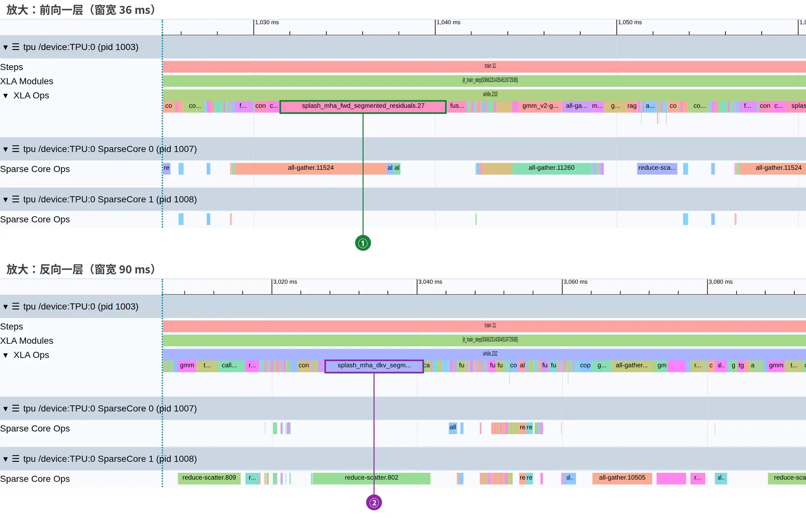
实测：XProf，长文数据，前向、反向各放大一层。
关键路径一换，原来的刀就重新排名：
实测：每格对它自己作业里的对照，第 5–9 步均值；短文那一列来自前几节的作业，长文来自长文数据上的作业；「限 2 条＋分两颗小核」短文用第六节同作业的读数（4.415 → 4.280），长文那一格的对照来自另一个作业，只看方向。短文上的暂存上限那一格只有百分比读数（−0.4%）。
长文数据：八成多的行是一整篇长文。同一配置换成长文，有效 MFU 10.98% → 17.83%，步时 5.311 → 5.553 秒。另在叠了前几节几刀的配置上比，长文比短文多出的 748 毫秒里 743 毫秒落在注意力两颗核上。
推断：长文数据的路由更不均（最差层负载比到 2.3），MoE 那段也跟着变，这是长文结论最大的不确定性。
无效的翻正，有效的变小：片上暂存上限（主核旁边那块小而快的存储能用多大）短文上几乎没用，长文上成了收益最大的一刀，就是站 18（−2.3%）。每压缩一次关键路径，就重新找一次；换一份数据，每一刀都要重测。
在短文上反而慢的融合核，长文上快了：它省下的计算不再被露出的等待吃光（推断）。在短文上有效的分核，长文上只剩一点：它藏的是那条链，链已经被盖住了。暂存上限在短文上几乎没用，长文上成了收益最大的一刀，就是站 18：4.787 → 4.678 秒（同作业 −2.3%）。
长文上先开暂存上限，再叠融合核：按最忙那颗芯片的 profile，融合核和周边一共省了约 156 毫秒计算，可一条规约多露 121 毫秒、MoE 的同步集合多等 82 毫秒，省下的被吃回去，整步基本没快（这一格是融合核连同另一项布局改动一起叠的；最忙那颗芯片的 profile 只省 25 毫秒，整步 4.672 → 4.657 秒，只省 15 毫秒）。省下的计算没落在关键路径上（第五节那条规矩，又一次）。
站 19、21 · 修掉优化器白搬的 FP32 主权重（图、动画、截图都是正式修法，−6.3%）
站 18 那一格，优化器段要 742.3 毫秒，约占一步的一成六（本课推导：742 ÷ 4613 毫秒的设备步）。Muon 先把动量换一种切法送去「正交化」，再换回来、加到 FP32 主权重（混合精度另存的 32 位权重）上。
以一块专家权重的 BF16 动量为 1 份（FP32 主权重一份顶 2 份），按设计一块只搬两次 BF16，共 2 份。
实测（离线编译产物）：沿操作数往上追，那两条 FP32 的 all-to-all，一条的输入就是参数本身，另一条在相加之后把新参数送回来。小核上每条 FP32 的 41.0 ms、BF16 的 20.5 ms；三块九条合计 307.5 ms，主核停着等其中 148.6 ms（profile 第 11 步）。
实测（离线编译产物，整步，每设备）：all-to-all 字节 29.59 → 12.52 GiB，其中 FP32 的（38 条，含专家以外的权重）22.93 → 0；FP32 的 all-gather 18.19 → 0.53 GiB（另一类按头切开的叶子原来用「全收再切」搬 FP32，一并去掉）。
实测（同一作业两格，第 5–9 步）：4.673 → 4.377 秒。修法：把每块参数自己的切法传给优化器，BF16 结果先钉回这个切法，再转 FP32、再相加；正交化本身一位没动。
实测：第 0、1 步 loss 逐位相同，从第 2 步起两边末位不同（正式修法差约 5e-4；站 19 那版局部修法第 2 步 1.1e-4）；按「不改算法的性能改动不要求逐位」接受（第十节）。
编出来的程序把 FP32 主权重搬到正交化那边、加完再搬回来：一块搬 5 份，是设计的 2.5 倍，三块都这样。
1 份是每设备 1.78 GiB：一块 8.9 GiB 对设计的 3.56 GiB，三块一步多搬约 16 GiB。代码只标了正交化前后的切法，没说结果回到哪；「加到主权重上」放哪边，编译器挑了正交化那边。
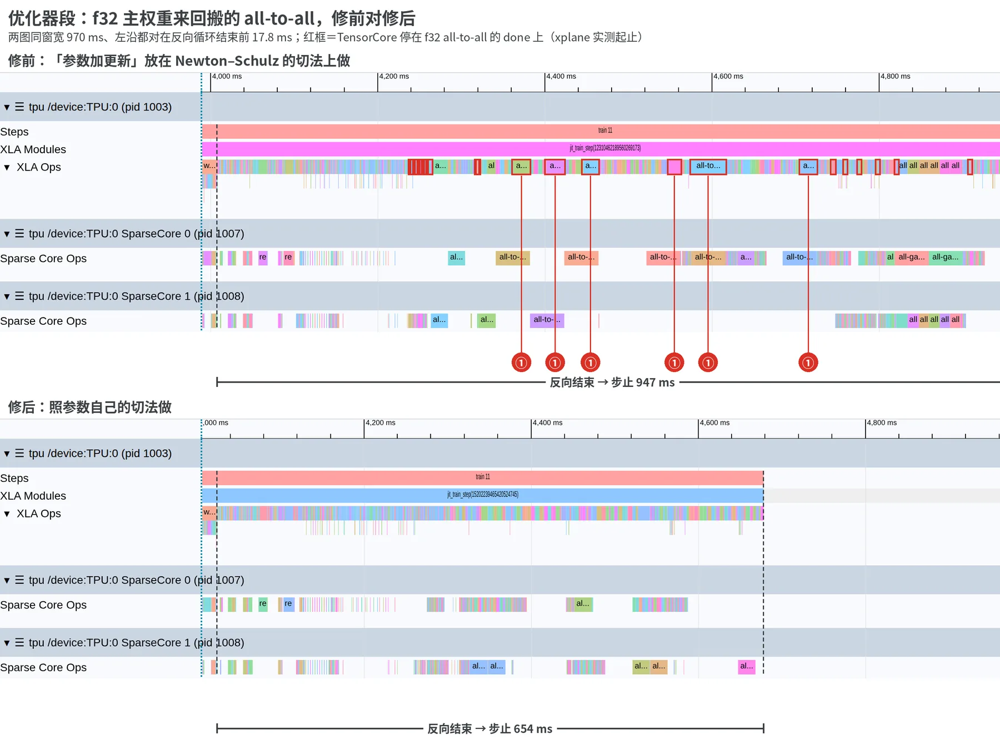
反向结束到一步结束：947 → 654 毫秒。实测：XProf，两张同窗宽 970 毫秒。38 条里含专家以外的权重（专家那 6 条最粗）；148.0 是截图那一步的单步读数，正文专家那一组的 148.6 取自另一份拆账，不是同一步。
局部修法同一个作业里 4.677 → 4.337 秒（−7.3%），记为站 19；正式修法单独量 −6.3%（同一底座、另一个作业，比局部修法少快约一个点，原因没拆）；站 21 在站 20（已含局部修法）之上再加正式修法，又快 0.8%。
局部修法（站 19）把正交化分几段做，结果按 BF16 换回去。正式修法（站 21）把每块参数自己的切法传进优化器，BF16 结果先钉回去再相加，不再依赖编译器碰巧挑哪一边，换了配置也成立：单独量 4.673 → 4.377 秒，正交化本身一位没动。两个数在同一底座、不同作业上量的，正式修法少快约一个点，原因没拆；选它是因为不靠编译器碰巧挑哪一边。
少搬字节，不一定要改精度：先查有没有白搬的。
站 20 · 注意力的输出投影存下来、反向少重算一步（跟站 15 存下的那一个不是同一步）· 4.342 → 4.251 秒（同作业 −2.1%）
同一个改动在短文上慢 3.7%，长文上快了（推断：长文上重算注意力更贵）。
旁线：那再砍一截呢？第七节那颗融合核放到一个同样少重算的配置上（那一格对照 4.351 秒，在换专家切法的支线上；主线上没存输出投影的配置（站 19）上单开是 +0.6%），主核又少算约 190 毫秒，一步却慢了 7.8%（不进编年史）。
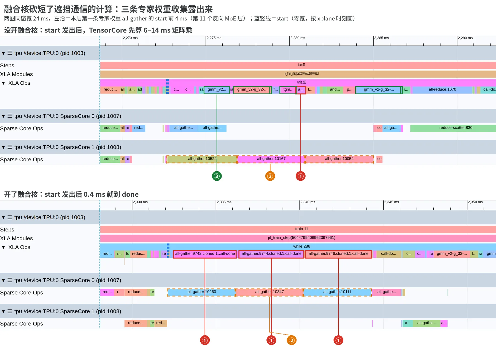
实测：XProf，两张同窗宽 24 毫秒，左沿在这一层第一条专家权重收集放行前 4 毫秒。图里标题写「先算 6–14 ms 矩阵乘」只数了矩阵乘；正文的 7 到 15 毫秒是括号里的全部计算。
实测（profile，一颗芯片的一个主核，各层取中位；拆的是融合核另带一项小改动的那一格，4.690 秒（对照 4.347，复测是 4.693）、+7.9%，那项小改动单开只慢 1.7%）：三条重新收集的括号里夹的主核计算 7.2 / 9.0 / 15.2 → 0.4 / 0.7 / 0.7 ms；设备一步 4258 → 4606 ms，主核计算少约 190 ms。
实测（编译产物，指令顺序）：括号里夹的核 4/5/6 → 1/2/3 个。融合核本身是真核。小核上集合通信的总忙时只多约 88 ms：活没多，是放行的位置变了。
实测：对照在三个作业里是 4.347 / 4.347 / 4.351 秒；换一个底座重测，4.421 → 4.768 秒，也是 +7.8%（两次都在换专家切法的支线底座上；主线上没存输出投影的配置上同一颗核是 +0.6%）。显存不是原因（带融合核那一格峰值反而低约 4 GiB）。
原因见 9.5：融合核报了耗时，就成了层调度器给收集挑的搭档，收集的完成点被钉在它旁边；在定稿之后的配置上去掉这颗融合核的估计，括号恢复，一步比不加融合核的对照还快 3.8%（实测）。这一格本身没有单独去掉估计重测，按同一条规则解释。限制同时在飞的收集条数，两种取值编出来跟原来一字不差（空操作）。
反向重算前要先把这一层的专家权重再收一遍。原来这三条收集的括号里夹着 7 到 15 毫秒的计算，藏得住。
重算段变短以后，调度器把放行排到了紧挨着完成，括号里只剩不到 1 毫秒，主核每条停下来等将近 4 毫秒；各层都这样，整步专家权重收集的露出从 64 涨到 560 毫秒，比主核省下的那一百九十毫秒还多，一步反而慢 7.8%。
告诉它这类收集更慢、要早发，括号确实宽了一点，可要救的 342 毫秒只回来 63，约六分之一。这颗核不进编年史，是一条旁线。
调度器为什么这么排，定稿以后才查清，见 9.5。
省了计算，还要看原来被它盖住的通信，现在露没露出来。
每站的起点多是同一个作业里重测的对照，跟上一站的终点会差几毫秒（站 25、26 的起点是上一站终点，对照写在括号里）。最快的是站 24（4.094 秒）；最后三站是精度修正（精度写法：代码里每处中间结果存 16 位还是 32 位），一站持平、两站让出 0.2% 和 0.1%，为了跟参考实现对齐。
站 21 · 再加正式修法 · 4.259 → 4.225 秒（同作业 −0.8%）· 有效 MFU 23.56%
回到主线：在站 20（已含局部修法）之上再加正式修法（9.2 讲过）。
站 22 · 注意力反向 kernel 不再为空块排空转的计算步 · 4.225 → 4.192 秒（同作业 −0.8%；换一批机器复测 −1.1%）· 有效 MFU 23.75%
站 8 跳掉的空块，反向 kernel 的网格里还留着计算步、照样空转；去掉以后又快 0.8%。
站 23 · 专家权重在层循环里逐层转 BF16 · 4.190 → 4.178 秒（同作业 −0.3%，在尺子边上）· 有效 MFU 23.83%
为显存不为步时：BF16 副本不再跨整个反向活着，省约 3 GiB。
站 24 · 专家两份权重先在 BF16 里拼好再收集 · 4.174 → 4.094 秒（同作业 −1.9%；30 步逐位相同）· 有效 MFU 24.32%
运行时每层要把专家两份权重拼成一块（前向、反向重算各一次）；改成先在 BF16 下拼好再收集，每层收集和梯度规约各少一组。到定稿为止最快的一站。
站 25 · 精度修正：两处归一化恢复 32 位 · 4.094 → 4.097 秒（步时持平；同作业关掉这两处 4.102 / 4.099 秒）· 有效 MFU 24.30%
对齐短跑里 loss 越跑越偏（300 步带符号平均 +6.8e-5）；归一化层两处恢复 32 位，回到执行噪声量级（−1.7e-5），步时不变。快的那一版先要是同一个模型。
每天拿参考实现跑一段短跑比 loss（对齐短跑），差不是来回抖，而是越跑越偏。从全 32 位的对照出发，一组一组切成 BF16 二分（只切缩放那一键的格没跑到，元凶靠排除法定），偏移落在归一化层（RMSNorm）上：前向先把归一化结果舍成 BF16，再乘一个 BF16 的缩放，一个数舍了两次。判据是 300 步带符号平均的绝对值 ≤ 2e-5。
站 26 · 前向精度写法改回跟参考实现一致 · 4.097 → 4.108 秒（同作业对照 4.099 / 4.104 秒，+0.2%）· 有效 MFU 24.23%
新规矩：除了梯度 BF16，精度写法都回到参考实现的写法；前向三处改回 32 位（起作用的只有输出层），代价约 0.2%。
站 27 · 梯度四处精度写法也改回参考实现（定稿） · 4.110 → 4.116 秒（同作业 +0.1%）· 有效 MFU 24.18%
看到：梯度那一组还有 6 处精度写法跟参考实现不同；四处便宜（各 0 到 0.4%），两处贵：专家权重梯度 ＋4.0%、路由梯度 ＋3.0%。判断：便宜的四处改回，贵的两处先留着。结果：4.116 秒、有效 MFU 24.18%，＋0.1%。
六处是一处一处单独改回 32 位、各量一格量出来的。路由那一处贵得有意思：它自己的计算反而少 5 毫秒，露出的专家权重收集等待却多了 118 毫秒。开了它以后，编译器把下一层专家权重的收集和 token 的收集合成了一个异步收集，token 要等路由算完，权重收集也跟着被拖晚（第七节那条规矩又一次：先看通信排到哪去了）。专家权重梯度那一处，多出的时间大半在反向：按专家算权重梯度的 kernel 输出 BF16，要单独转一次 FP32 才能交给 FP32 的规约，剩下的是规约字节翻倍（离线定位）。
这就是长文推荐配置的定稿。同作业累计快约四分之一（5.556 → 4.116 秒）；定稿那时对外报 200 步长跑 4.192 秒、有效 MFU 23.71%，0 次整步回放、0 个 token 被丢。
长文这一段在定稿那个作业里重测起点是 5.556 秒。上面的 4.116 秒是 30 步的短格（同作业比改动用这个口径）；长跑取第 5–199 步平均，所需缓冲最大 3.79 倍（缓冲是 4 倍）。长跑比短格慢约 2%：短格取的第 13–20 步，MoE 最忙专家的负载比还低；长跑约第 40 步以后负载比升高、之后走平。（站 22 也是 4.192 秒，是巧合，不是同一格。）现在对外报的是定稿之后第三步那一版的 200 步长跑：3.941 秒、有效 MFU 25.22%（9.5）。
定稿时离有效 25% 还差一截；定稿之后第二步 30 步短格过线，第三步长跑也过了（25.22%）；128 片全量版本离线编过、放得下，还没上卡。
定稿之后又加了三步：① 路由先挑 top-k 再收集（4.082 秒，−0.9%；跟站 2 带过、站 5 跟另两项打包一起去掉的是同一个开关，当时没单独量过，长文上量出了收益）；② 融合核不报耗时、③ 调度门槛，都在 9.5；编译改动（9.6）叠在 ③ 的对照里，不单算一步。
按长文的有效分子推，25% 要 约 3.98 秒（1148.2 ÷（0.25 × 1155））（这几格的有效 MFU 是作业自己报的，拿 1148.2 反推会差 0.04 个百分点以内），定稿按短格还要再降约 3.4%（约 139 毫秒），按长跑口径约 5.1%（约 215 毫秒）。定稿之后第二步 3.931 秒（25.33%）短格过线，它的 200 步长跑 4.018 秒（24.74%）还差约 1.0%（约 41 毫秒）；第三步短格 3.868 秒，200 步长跑 3.941 秒（25.22%），长跑也过了线。128 片全量的版本只在它上面多加一项视觉塔逐层重算：正常步 88.99 GiB，离余量线（上限 94.74 减 1.5）还有 4.25 GiB（定稿之后第二步那一版是 88.57 GiB、余 4.67 GiB；第三步 90.69 GiB，余 2.55 GiB）。各格的有效 MFU 用各自窗口那几步的分子，按 1148.2 折算会差 0.04 个百分点上下；显存为什么要在全量上单独编，见 3.4。
视觉塔逐层重算：半层底座上步时 +1.0%，换来全量上放得下。三个省显存的开关（含视觉塔逐层重算）一起带上，半层底座上慢 11.5%，全量峰值只比单开视觉塔重算低约 0.2 GiB，所以不带。省显存要先在全量上看峰值卡在哪一段，再挑对症的那一项。
同一份关键路径拆账挑出三个候选，同一个作业里各自对站 23 重编的对照（4.174 秒）量：先拼后收 −1.9%（就是站 24）；激活函数只算有效行的专用核 4.182 秒，+0.2%，持平；注意力前向的计算块改小，4.269 秒，慢 2.3%。块形状一变，搬运跟着变，跟第八节「离线数指令看不到搬运」是同一类：必须上卡。
先拼后收在短文上量过：4.052 → 4.091 秒（同一台机器），慢 1.0%，当时判为不要；换到长文，快 1.9%。长文上最忙芯片的关键路径里有约 247 毫秒的运行时拼接，先拼后收兑现了 80 毫秒（实测）；短文上它不在关键路径上（推断）。
| 条件 | 一步 | 为什么 |
|---|---|---|
| 短文（第七节） | 慢 2.0% | 一条梯度规约的完成点被挪到注意力反向之前，没东西盖 |
| 长文，单开（9.1，对照 4.788 秒的配置） | 快 1.1% | 注意力长，等待被盖住，省下的计算兑现了（推断） |
| 长文，叠在暂存上限上（9.1） | 基本没快 | 省 156 毫秒计算，规约多露 121、同步集合多等 82 |
| 长文，叠在少重算的配置上（9.3） | 慢 7.8% | 三条专家权重收集的放行排到了紧挨着完成 |
| 长文，定稿之后（9.5） | 慢 10.6%；不报耗时快 3.8% | 核报了耗时就成了收集的搭档，完成点被钉在它旁边，括号排空 |
9.3 换一个底座重测（两次都在换专家切法的支线底座上）：4.421 → 4.768 秒，也是慢 7.8%。限制同时在飞的收集条数，两种取值编出来跟原来一字不差，是空操作。
先看这段计算原来是不是在盖着某条通信：拿掉它以后，那条通信的放行和完成之间还夹着多少计算。这一讲里同一颗核，长文上单开快 1.1%，叠在少重算的配置上，三条专家权重收集没东西盖，慢 7.8%。
定稿之后第二、三步 · 编年史柱图到站 27 为止 · 对照 ＝ 定稿之后第一步（路由先挑 top-k 再收集），4.088 秒
先给结论：融合核报了耗时，就被选作收集的搭档，收集的完成点钉到层首，主核空等；不报，快 3.8%；所有核照实报、再把门槛提到 3 毫秒，又快 1.0%。下面是怎么查出来的。
加了一颗更快的核，一步又慢了。在定稿之后第一步的配置上（对照 4.088 秒，在常驻机器上重测：一直占着、反复上卡测的那批机器）把 9.3 那颗融合核再单加一次，一步变成 4.522 秒，慢 10.6%。最大的一笔又在专家权重收集上：拼好的 gate/up 那条（专家 FFN 第一层的两块权重，站 24 以后先拼再收），每步露出从 41.5 毫秒涨到 290.5 毫秒。
调度器怎么知道一样活要多久 Pallas 核自己报
排括号之前，调度器得先估每样活多久。编译器自己生成的计算它会估；用 Pallas（JAX 里手写 TPU kernel 的工具）写的核是黑盒，只能看写核的人在公开接口 pl.CostEstimate 里填的运算量、读写字节，换算成时长。不填的核，按几乎不花时间算。这颗融合核填了。
第一步，查报得准不准。拿对照那一格的 profile 一颗一颗对：没有一样准，而且有长有短。
实测：每颗核的实测取对照那一格 profile 里一颗芯片、一个主核的单次耗时；融合核在对照里没有，实测取同形状的另一格。估计取编译产物里每颗核随身带的耗时估计（运算量、读写字节），按调度器的换算方式折成时长。
为什么偏（本课程作者的解释，部分是推断）：专家矩阵乘按整块 MoE 缓冲的行数报运算量，核实际只算有效行，所以偏长约 2.4 倍；注意力核按静态掩码报，运行时又跳掉一截空块，所以偏长，视觉塔那两颗反过来偏短；融合核报的读写字节核过是对的，慢在它只跑到显存带宽的一半左右。
小核上的收集不是 Pallas 核，没有「报」这回事：调度器按自己的通信公式估 16.2 ms（调度导出里看到的约 26 ms 是放行到完成的距离），实测小核上约 8.2 ms；偏长的 2 倍来自公式让同一芯片两颗小核平分链路带宽。
这张图只说明估计普遍不准；下一张图说明，准不准并不是括号空掉的原因。
第二步，看调度器自己排的时间线（离线编译时导出，每条指令的起止全按它自己的估计）。盯住 gate/up 那条收集的括号：
实测（离线编译时导出调度器排好的时间线，读每条指令的起止）：窗 ＝ 调度器时间线上从放行到完成的时长；窗里的计算 ＝ 夹在中间的指令按调度器估的时长合计；都是调度器自己的估计，不是上卡时间。窗长：对照 26.1 / 15.0，核报耗时 26.2 / 10.2，调准 26.0 / 10.1，不报 34.8 / 23.7 ms（gate/up / down）。调度器自己记的空等（反向一层）：5.8、21.8、21.6、4.2 ms。
实测（上卡，profile 第 11 步一颗芯片一个主核，按收集的名字合计全部层）：gate/up 那条每步露出 41.5 → 290.5 → 不到 14 ms；down 那条 85.4 → 150.8 → 77.4 ms。对照的 41.5 取同配置另一作业的 profile。核报耗时那格，gate/up 括号里主核真在干活的时间各层中位只有 0.65 ms（对照 6.7–7.0 ms）。
「报：约 0.1 ms」：融合核四颗各报的耗时换算成时长是 0.068 到 0.178 ms；调准那格按实测把四颗各乘 1.35 到 1.98 倍。为什么报了这么小的耗时就把括号排空，见下一节的配对规则：报了耗时它就成了候选，又是本轮最大的计算，收集的完成点被钉在它旁边。
对照里括号里排进 10.4 毫秒计算。换上融合核，只剩 0.48 毫秒，调度器自己都记下这一层空等 21.8 毫秒。把融合核报的耗时按实测调准，还是 0.55 毫秒。让它什么都不报，括号里回来 11.9 毫秒，比对照还多。四颗融合核各报的耗时换算下来只有 0.07 到 0.18 毫秒：报不报就差这么一点，括号一个满、一个空。差在「报没报」，不在「准不准」。
第三步，上卡。时间线只是调度器自己的估计，算不算数要上卡量。七个改动加一个对照共八格，都叠在同一个对照上（「不报 ＋ 同样校准」那格没导出调度器估计）：
实测：八格各跑在不同的常驻机器上，跨机噪声约 0.4%；30 步取第 13–20 步。对照 ＝ 定稿之后第一步（路由先挑 top-k 再收集；开篇总览里 4.082 秒，这组实验在别的常驻机器上重测 4.088 秒）。
实测（逐位）：三格校准对对照 30 步 loss、梯度范数逐位相同；融合核那几格之间（报、调准、不报）也逐位相同：耗时估计只进调度器，不进计算。融合核本身对原来的写法不逐位（loss 最大相对差 9.7e-05，核里的累加顺序不同）。
实测：调度器自己估的整步来自离线编译时导出的时间线；「融合核不报耗时 ＋ 同样校准」那格没导出。
为什么校准反而慢（下一节的配对规则 ＋ 编译产物）：校准那几格只改了估计，门槛还是默认的极低值；「两类核校准」还给原来不报耗时的 token 搬运核补上了估计，它们也成了候选。最终程序里，gate/up 收集的搭档从矩阵乘前移到搬运核和小的矩阵乘，括号被排短；客观判据算出这格的露出比对照多 234 ms。旁证：只调短收集延迟估计那格，调度器自己记的空等从 5.8 降到 2.8 ms，前向一条专家权重收集的实测露出却从 218 涨到 352 ms：调度器的账变好看，不等于搭档选对。
融合核不报耗时那一格 3.931 秒，比对照快 3.8%：几条专家权重收集多露出的约 300 毫秒（gate/up 那条约 250）全回来了。这是定稿之后的第二步，已批准进推荐配置。耗时估计只进调度器、不进计算，三格 loss 逐位相同。
校准那几格更怪。把专家矩阵乘和注意力核的估计按实测校准，调度器自己算的整步从 5167 毫秒变成 3965 毫秒，落到对照实测的四秒出头附近；这一格自己上卡却是 4.474 秒，慢了 9.4%。两件怪事，要看调度器到底怎么用这些估计。
只把小核收集的估计调短，慢 5.8%；两样一起，慢 6.1%。
接着弄清配对规则。编译器里在主调度器之前，还有一个「层调度器」专管给通信找搭档（规则是整理出来的；最终编译产物里核实的是分组结果）：
这是层调度器行为的示意，省掉了两条次要规则：一轮里只有通信、没有计算时怎么顺延；同一轮里几颗计算一起配给一组通信。块的长短示意；11.9 ms 是调度器自己的估计，290.5 和不到 14 ms 是上卡实测。
核实：最终编译产物里，每条通信的完成点和哪颗计算被分进同一个调度组，可以直接读出来。融合核报耗时时，两条专家权重收集的完成点和融合核同组；不报时，和专家矩阵乘同组。
默认的入选门槛极低，所以一颗核只要报了耗时，哪怕只有 0.1 毫秒，就是候选。融合核报的耗时调准以后依然是候选、依然是本轮最大的计算，所以调准也没用（上一张图的第三行）。
换上融合核、又报了耗时，它就成了候选，跟两条专家权重收集落在同一轮，还是这一轮最大的计算，于是收集的完成点被钉在层体最前面。权重其实要到后面的专家矩阵乘才用，主核却在融合核旁边停下来等，括号是空的。
不报，融合核进不了候选，收集第一次碰上计算是矩阵乘那一层，完成点回到用数据的地方，上游 11.9 毫秒的计算都进了括号。报的耗时调准了，它照样是候选、照样最大，所以调准没用。这两件都能在最终编译产物里直接读到：每条收集的完成点跟哪颗计算分在同一个调度组。
配搭档只看依赖层次和单颗核的估计，不看括号里攒下的计算够不够盖住这条通信。「融合核不报耗时」是绕开了这个缺陷，不是原理上对了。
同一条规则：只改估计、不动门槛，原来不报耗时的 token 搬运核补上估计以后也成了候选，收集的搭档前移到搬运核和小的矩阵乘上（编译产物里读得到），括号被排短。
最后是正路。所有核照实报耗时，门槛提到 3 毫秒：耗时短的核全挡在外面，专家权重收集（64 片拓扑上）没有搭档，完成点贴着用数据的矩阵乘；小核收集的延迟估计乘 0.32（扫出来的值，为什么是它见下面的折叠）。融合核照实报也只有零点几毫秒，进不了候选，第二步「不报」就不需要了。门槛从默认扫到 10 毫秒：
调度器估 16.2 毫秒，物理上乘 0.5 得 8.1、对上实测约 8.2；0.32 是判据扫出来更好的值：比物理值还小，等于把收集估得更短，开始点就放得更晚，同一时间挤在小核车道上的通信变少；调度器只排先后，不算车道占满后的排队时长，这样等于间接避开了排队（推断）。这里的 16.2 是调度器的估计，跟每层图里专家梯度规约的 16.2 毫秒无关。
预测：客观判据按最终程序的指令顺序回放，主核每条指令用 profile 实测的时长，两颗小核各一条先来先做的车道跑实测的通信时长，算每条通信的括号和露出。在八格上校验过：gate/up 收集的预测露出 42.6 / 280 / 3.4 ms，对上卡实测 41.5 / 290.5 / 不到 14；整步排序两头对得上，中间有两处相邻互换；绝对值偏低约 15%，所以只用来排名，不报快多少。
4 层模型：1 层稠密 ＋ 3 层 MoE、视觉塔 2 层，反向层体的搭档跟 39 层完全相同，编一格约 70 秒；每个点一格，只编不上卡。39 层复核（64 片拓扑）：3 ms ＋ ×0.32 3163，4 ms 3201，3 ms 不调延迟 3220，推荐配置 3375，排序跟 4 层一致。128 片拓扑那条借用 64 片 profile 的通信时长表，形状可信，绝对值不可信。
每档门槛下专家权重收集的搭档（编译产物）：默认是融合核；0.2–0.5 ms 是 token 搬运核加矩阵乘；0.75–1 ms 是矩阵乘，跟推荐配置相同；1.5–2 ms 是矩阵乘加注意力反向；3 ms 起，64 片拓扑上没有搭档，完成点贴着用数据的地方；128 片（×0.32）在 3–5 ms 时搭档仍是注意力反向，6 ms 起才没有。照实报以后专家矩阵乘、专家权重梯度约 1.4–2.7 ms，所以被 3 ms 挡在外面。换模型、换芯片数，大核的绝对时长会变，门槛要重扫。
上卡：3 ms ＋ ×0.32 在同一台机器上 3.907 → 3.868 秒（-1.0%），逐位相同；判据把它排第一（按判据的整步折算是 -6.3%，判据只用来排名）。差的那截没有消失，搬到了小核车道上（见正文）。
64 片和 128 片两种拓扑形状一样：默认门槛最差，搭档又是融合核，比当时的推荐配置还慢；0.75 到 1 毫秒是一个平台，搭档跟推荐配置一样是矩阵乘；3 毫秒最好；6 毫秒以上所有核都被挡在外面，退回推荐配置的水平。39 层复核了排在前面的几格，排序跟 4 层一致，3 毫秒那格排第一。
上卡只快了 1.0%。同一台机器上 3.907 → 3.868 秒（对照 3.907 秒已经叠上 9.6 采用的编译改动），30 步逐位相同，已批准进推荐配置。搭档调对以后，瓶颈挪到了小核车道的容量上；判据也是模型，没装进去的瓶颈，调对一处就会在那里冒出来；判据只用来粗筛、排除明显差的组合，在当前最优附近连只调门槛都会看错：门槛从 3 毫秒再调到 2.5 毫秒，判据预测再快约 5%，上卡 3.856 → 4.011 秒，反而慢 4.0%；把专家收集手工钉到某颗小核，判据说会快，上卡三个候选全慢 2.6% 到 8.3%。不管哪类改动，最后都要靠上卡定。剩下的空间也不在调度参数上：每步还有约 1003 毫秒停在完成点上，其中前向 gate/up 收集约 176 毫秒（每层括号里只有约 3.5 毫秒计算，盖不住约 8.1 毫秒的收集）、反向那条约 299 毫秒（排在梯度规约后面）、token 收集约 150 毫秒，要动的是结构：前向收集更早发起、梯度规约分块、MoE 分块（下一步方向，未验证）。
128 片正常步 90.69 GiB，放得下。门槛 4 毫秒那格 4.007 秒，比同一个作业里的对照 3.910 秒慢 2.5%，所以取 3 毫秒；39 层复核时判据把 4 毫秒排在推荐配置前，上卡却慢，判据只筛明显差的，门槛靠上卡定。差在哪：每步主核停在通信完成点上的等待合计 1013 → 1003 毫秒，几乎没变，露出只是在小核的通信之间搬了家：反向上下文并行那条规约少露 254 毫秒，gate/up 专家收集多露约 290 毫秒：它在小核 1 上每层排队约 17 毫秒，排在专家权重梯度规约（两颗小核都占）和别的收集后面；少露的那条规约在另一颗小核上，不在同一条车道。
判据原来只让钉在单颗小核上的通信占车道。把同时用两颗小核的集合通信也放进车道，专家收集的露出就对上了（推荐配置预测 310、实测约 317 毫秒；3 毫秒那格 621、约 599）；可这样它又算不进规约被盖住的那一截，反过来预测慢约 3%。真实情况在两种模型之间。
每格只在 CPU 上离线编译，再拿实测的每条指令时长按最终程序的顺序回放（客观判据，怎么校验的见上图出处），只用来排名。模型用 4 层代替 39 层，反向层体里的搭档完全相同，一格编译约 70 秒，39 层在编译机上挤着编要 15 到 25 分钟。
| 说法 | |
|---|---|
| 上卡实测（八格） | 融合核报耗时 +10.6%，不报 −3.8%，几格校准 +4.8% 到 +9.4%；gate/up 收集每步露出 41.5 → 290.5 → 不到 14 毫秒；报、调准、不报三格逐位相同 |
| 编译产物 | 报了耗时，收集的完成点和融合核分在同一个调度组，括号里只排进 0.48 毫秒；调准了还是 0.55；不报，和矩阵乘同组，排进 11.9 毫秒；校准那几格，搭档前移到 token 搬运核和小的矩阵乘 |
| 预测 | 所有核照实报 ＋ 门槛 3 毫秒 ＋ 延迟估计 ×0.32 整步最好（4 层两种拓扑、39 层复核排序一致，39 层预测 −6.3%）；128 片拓扑那条借用 64 片的通信时长，只看形状 |
| 上卡实测（正路） | 3.907 → 3.868 秒，−1.0%，逐位相同；等待合计 1013 → 1003 毫秒，规约少露 254、专家收集多露约 290 |
| 实测拆账 | 专家收集在小核 1 上每层排队约 17 毫秒，排在专家权重梯度规约后面；把多核集合通信放进车道的判据，专家收集露出对得上 |
| 没单独重测 | 9.3 那一格（少重算的配置）没有单独去掉估计重测，按同一条规则解释 |
上卡：八格各在不同的常驻机器上（跨机噪声约 0.4%），30 步取第 13–20 步。编译产物：离线编译导出的调度时间线和最终程序里的调度分组。预测：客观判据，见上一段。
自己写 Pallas 核：报了耗时，它就可能成为通信的搭档。耗时短的核要么不报，要么照实报再用门槛把它挡在候选外面；只校准不设门槛没用（这次慢 9.4%）。报和不报都上卡量，以步时为准。
融合核本身对原来的写法就不逐位（30 步 loss 最大相对差 9.7e-5，核里的累加顺序不同），所以「融合核 ＋ 不报耗时」按第十节的两道轻检查判，对照取上面那个 4.088 秒的配置：
不能。耗时报上去，这颗核就可能成为某条通信的搭档，把完成点拽到自己旁边，括号就空了，调准也救不回来（这一讲融合核那格照样慢 10.6%）。先看最终程序里通信的搭档是谁、门槛有没有把小核挡在外面，再上卡比报和不报两格，以步时为准。
定稿之后 · 工具 · 不为步时，为编一格要多久
编一次，等二十多分钟。每一刀都要先离线编译、看产物。128 片全量编一格，独占一台 192 vCPU 的编译机要 1522 秒，约 25 分钟（页首按半小时取整）；编译机上十几格挤着编，要 33 到 39 分钟。半层也要 647 秒。
半层一格 89% 的时间在 XLA 编译里，编译时间跟着程序大小走。解码器的层是用 scan 写的，39 层变 78 层，循环体一条指令都不多；可 128 片编一格还是半层的 2.4 倍。增长全在循环外最大的那一段程序里：优化前这一段半层 61.0 千条指令、128 片 109.8 千条（整个程序见图右栏 86.8／143.4 千条），其中约八成是优化器。
Python 的 for 和 JAX 的循环，编出来不一样。JAX 先把函数在 Python 里跑一遍、记下每个运算（trace）。Python 的 for 在 trace 时真的跑 N 遍，每一遍都原样记进程序；lax.fori_loop、lax.scan 只记一份循环体，编译器也只编这一份。
半层一个程序里正交化被调用 174 次，约 107 次是视觉塔的单块矩阵。
这个模型有两处被 Python 展开：视觉塔 20 层用 Python 的 for 一层层调；优化器对每个参数叶子各生成一套计算，牛顿迭代 5 步又是 Python 的 for。视觉塔每多一层，优化器就多一整套代码。
实测：独占一台 192 vCPU 的编译机；第 1 步起两个程序分两个进程同时编。原来在编译机上十几格挤着编，128 片一格要 33–39 分钟。
实测：半层一格 89% 的时间在 XLA 编译里；循环外最大的那一段程序优化前有 61.0 千条（半层）、109.8 千条（128 片）指令，其中优化器约占 80%。
诊断格（故意改程序，只为看清时间花在哪，不是方案）：优化器换成 AdamW（只为诊断） -41%；视觉塔 20 层减到 10 层（只为诊断） -28%。
两进程并行编：正常步的产物逐字节相同；回放步的程序逐字节相同，可执行文件只差 3 处模块编号。三刀改的是程序本身，数值见正文。
先不动模型代码：正常步和回放步分两个进程同时编，半层 647 → 361 秒，128 片 1522 → 898 秒，产物逐字节相同。再下三刀：牛顿迭代改循环、同形参数叠成一批、视觉塔改 scan，最后半层 154 秒、128 片 153 秒，128 片和半层一样快：程序一样大了，只差堆叠维度。
单开它，一步 3.928 → 4.016 秒（+2.2%），优化器里两组收集多露出约 72 和 41 毫秒、all-reduce 多等约 17，主核一步净长约 86 毫秒。展开写法下，调度器能把不同块、不同叶子的牛顿迭代交错排，让一块的通信藏在另一块的计算底下；改成循环，循环体内只能串行，这些重叠就没了。
第一刀上卡变慢没收，最终只开后两刀：编一格半层 183 秒、128 片 181 秒，跟三刀全开差不多（同一份最新代码上三刀全开是半层 154 秒、128 片 166 秒；图上两分半那一行是在定稿代码上量的）；上卡快 0.5%，不逐位、在噪声里，已批准进推荐配置。
| 改动 | 逐位吗 | 为什么 |
|---|---|---|
| 两个程序分进程同时编 | 逐字节相同 | 程序没变；回放步的可执行文件只差 3 处模块编号 |
| 牛顿迭代改 JAX 循环 | 不逐位 | 舍入点有增删：展开写法里编译器能把相邻两步融在一起、省掉中间那次舍成 BF16；循环每步都要落回 BF16 的循环变量。CPU 上强制每处都舍，两种写法逐位相同 |
| 同形参数批量正交化 | 不逐位 | 累加顺序变了：原来矩阵乘的规约维切在多张卡上，叠成一批后每张卡拿整块矩阵算 |
| 视觉塔 scan | 初始化逐位相同 | 层还是按原顺序一个个建，随机数流不变；CPU 小模型上前向逐位相同，卡上融合变了，最终候选整体不逐位、在噪声量级（见下） |
实测：离线编译产物逐字节比对；舍入增删按优化后程序里牛顿迭代的 FP32→BF16 舍入数（按执行次数）5485 → 5119。
上卡（同作业 30 步，最终候选 ＝ 同形批量 ＋ 视觉塔 scan）：对照 3.926 秒，最终候选 3.907 秒（−0.5%，在常驻机器之间约 0.5% 的噪声带边上），不逐位，30 步 loss 差在执行噪声量级；300 步 lm loss 对推荐配置带符号平均 -9.0e-6，执行噪声量级。已批准进推荐配置。
第一道轻检查（扫舍入增删）：最终候选有 3 处增删，视觉塔 GELU 反向 1 处、正交化 2 处，都是代码里写了舍成 BF16、融合变了以后被省掉的集合跟着变，算法不变；按先例接受。
视觉塔改成 scan 以后，调度变了：三份 BF16 专家权重副本（每份 1.78 GiB）的存活区间跨过了 loss 段，峰值从解码器反向挪到 loss 段。最终候选叠在推荐配置上，半层正常步 80.50 → 84.98 GiB，多约 4.5 GiB；128 片 88.57 → 91.29 GiB，仍在上限 94.74 GiB 减 1.5 的余量以内（再叠上门槛 3 ms 那一步离线编是 90.69 GiB，见 9.5）。
先量程序大小，挑大头改成 lax.scan / lax.fori_loop，同形参数叠起来批量算；改完上卡量，变慢的不收（牛顿迭代那一刀就没收）。循环化会动舍入，也可能丢掉跨迭代的通信交错，先查数值、再上卡比。
为了看清时间花在哪，故意改程序编了两格（不是方案）：优化器换成 AdamW，正常步编译 −41%；视觉塔 20 层减到 10 层，−28%。所以优化器的展开代码约占编译时间的四成，视觉塔每层约 10 秒（正常步程序单独编，基线 345 秒）。另外两件没做：牛顿迭代的流水块改循环只省 1.6%，而那几块是为了让通信和计算交错才展开的；梯度范数、Adam 这些按叶子批量，要多搬约 23 GiB，不划算。
数优化前程序的指令数，按 Python 调用栈归类，找循环外最大的那一段程序里是谁被展开了。这一讲是视觉塔逐层写和优化器逐叶展开：视觉塔每多一层，优化器就多一整套代码。改成 scan、批量以后，128 片和半层编得一样快。
修掉白搬字节的那一刀，第 2 步起 loss 就不再逐位相同（约 5e-4）。快了，还是同一个模型吗？
关卡 · 站 19–21，以及一条试过的支线（给专家权重换一种切法，跟站 1 不是一回事），上线前都要过
拿两个改动演示：甲是站 19／21 修白搬字节那一刀，乙是一条试过的支线（换专家权重的切法）。不改算法的性能改动不要求逐位，过两道轻检查就行（第六节）；可要比前后，先得知道同一份程序自己跑两次是不是一样。
专题八 §10.3 说，程序一字不差，结果就逐位相同。这次撞上了例外（另一份开着一个转置开关的程序）：一份编好的程序，同一批数据跑 30 步，前后 12 次，有 1 次从第 9 步起分叉（下图Ⓑ第四行）。
实测（Ⓐ）：那份早期程序（测试底座），原样跑 3 次，3 次都在第 1 步报 NaN（第 0 步那次更新以后参数就坏了）。每格在它上面加一个开关重编（最后一格是强制异步加交给小核两个开关一起开），跑 3 次。六格分别是：加一行日志（只改调度）、all-to-all 强制异步、关掉分片预取、DMA 并发限成 1 路、优化器的 all-to-all 交给小核、强制异步 ＋ 交给小核。「加一行日志」不改计算，只让编译器排出的顺序变了，3 次全好、而且逐位相同：这本身就说明它跟顺序有关。
实测（Ⓑ）：同一份编好的程序、同一批数据，每次跑 30 步，所有指标跟第一次逐位比。转置开关那 1 次从第 9 步起分叉；换切法 ＋ 转置开关的 4 次分在第 9、11、17、17 步，第 17 步那两次的值也互不相同。去掉两个 all-to-all 开关的 3 次从第 21 步起分叉，结果只有两种；两个都没有 NaN。
转置开关单独 12 次里 1 次、跟换切法一起 18 次里 4 次，这个样本量下分不出差别，不能说换切法会放大它。
⚠️ 推断：最可能的竞争对是静态分析找到的：主核上同步执行的一条 all-to-all，它的输出放进了一块刚被释放的内存，那块内存上一个主人的最后一次读，就排在这条 all-to-all 紧前面；别的设备先跑到，把数据写进来，本机可能还在读。没有在硬件上直接证实。
同一份程序跑出不同结果，就是竞争：谁先做完没定死。它不报错、不是每次都出现，所以靠「开关 × 次数」找：一格只改一样，每格跑几次，数坏了几次。有竞争的配置不当候选，哪怕它更快。
一份早期程序第 1 步就 NaN，3 次 3 中；每格只加一个开关重编、跑 3 次，强制异步、关预取、限 DMA 都还是 3 次 3 中，只有让优化器那批 all-to-all 改由小核来跑，0 次（Ⓐ）。连加一行日志都能让它消失，因为排的顺序变了，这本身就说明它跟先后有关。
当前程序没有 NaN，可在换切法那条支线上去掉这两个 all-to-all 开关，9 次里 3 次分叉；专家矩阵乘反向的一个转置开关（试过、没进推荐配置），单开就 12 次里 1 次分叉（Ⓑ）。
去掉那两个开关还能再快 0.7%，不要。第八节那批新版本默认留在主核上同步跑的 all-to-all，交给小核在第七节只兑现了 64 毫秒；它更大的用处在这里。
最可能的一对是一块零余量复用的内存，两边读写撞在一起（推断，硬件上没证实）；那个转置开关的分叉不是这一类，根因还没找到，所以不进推荐配置。
静态分析那份早期程序：主核上同步执行的一条 all-to-all，输出放进了一块刚释放的内存；那块内存上一个主人是正交化的中间矩阵，它的最后一次读就排在这条 all-to-all 紧前面，中间没有余量。别的设备先跑到这条 all-to-all，把数据写进本机这块内存，本机可能还在读上一个主人，读到半新半旧的数。
它能解释全部现象：坏的是一个设备上一整块专家；只有少数设备坏；坏在第几步不固定；加一行日志以后排序变了，这一对隔开了一百多个位置，就好了。把 all-to-all 交给小核的程序里，这种零余量的复用一对也没有。没有在硬件上直接证实。
那个转置开关的分叉跟它不是一类：那份程序里零余量的复用是 0 对。一度怀疑是开了它以后，矩阵乘直接去读小核异步收集回来的缓冲；改成先拷贝一份再读，14 次里还是 4 次分叉（还更慢），这个嫌疑作废了。只开在一部分权重上也照样分叉（11 次 1 次）。根因还没找到，所以它不进推荐配置。
乙只换了专家权重的切法，随机种子和数据都一样，第 0 步的 loss 就差 0.0045：还没更新过参数，这个差不可能是累积出来的（甲没动切法，起点本来就一样）。
⚠️ 示意：方块大小、切法和颜色都是画出来说明道理的，不是真实权重。
📌 实测：同一批数据、同一个随机种子，只换专家权重的切法；默认的随机数生成器按每个设备自己那一份生成，第 0 步 loss 差 0.0045；换成跟切分无关的生成方式后，两边第 0、1 步 loss 和梯度范数逐位相同。
| 初始化用的随机数 | 对照 | 换专家权重的切法 |
|---|---|---|
| 按切分各自生成（快） | 基准 | 比对照高 0.0045 |
| 跟切分无关 | 基准 | 逐位相同（第 0、1 步） |
实测：同一批数据、同一个随机种子，第 0 步还没有更新过参数。训练默认用的随机数生成器为了快，在每个设备上按自己那一份各自生成；换了切法，同一个种子生成出来的初始专家权重就不一样。换成跟切分无关的生成方式（按全局位置生成、跟切分无关；原来那种更快）重跑这一对，第 0、1 步的 loss 和梯度范数逐位相同，从第 2 步起才分开。
推论：用前一种初始化跑的两条 200 步曲线（换切法那条平均高 0.0034），两边起点就不同，不能当数值证据用。
比改动前后，先让两边从同一份初始权重出发。初始权重对齐以后，前向一位不差，差只出在优化器更新上。
起点对齐以后，第一道轻检查是离线扫一遍被省掉的舍入。两边融合得不一样，省掉的位置就不一样，所以先让两边都开强制舍入：代码里写的每一处舍入都真的舍，再逐处比。
| 前向、反向 | 优化器 | |
|---|---|---|
| 两边都不开强制舍入 | 逐处相同 | 省掉的位置换了：对照 6 处在正交化里面，换切法 11 处在正交化的输出 |
| 两边都开强制舍入（先补上强制舍入漏掉的正交化输入那一下） | 逐处相同 | 逐处相同：被省掉的舍入，两边差 0 处 |
实测（离线编译产物）：被省掉的舍入，是代码里写了要舍成 BF16、编译器融合时省掉的那些（专题八 §5.4 的「省舍入」）。两份程序融合得不一样，省掉的位置就不一样；不先让两边都真舍，比出来的差分不清是改动的还是融合的。
第一次两边都开强制舍入时，换切法那边还多 11 处，都在正交化的输入转 BF16 那一下：强制舍入没覆盖到；补上以后重扫，差 0 处（两条线各自独立扫过一次）。
强制舍入只在比对时开，生产不开。开了步时也没变：同一个作业里关 4.423／4.432 秒、开 4.413／4.407 秒，没看到变慢（这组在另一个底座上量，只说明不拖慢，不当收益）。
第二道是短跑比 loss（甲只做了这一道，上面的舍入扫描拿的是乙）：甲（9.2 那一刀）从第 2 步起单步 loss 绝对差约 5e-4（loss 约 13，折相对约 4e-5），跟借来的参照（乙那组只改执行方式的副本，300 步逐步平均 3.9e-4 到 4.5e-4）同一量级；口径不同，只算旁证（推断）。放行的依据是：改的只是在哪一边相加、算法不变（第六节那张表），叠好以后 300 步整体验证在噪声里（10.4）。
做法：换切法那一刀和对照都从同一份初始权重跑 300 步，再各配一份只改执行方式的副本（关掉通信与计算重叠的调度，算法不变）。比的是逐步 loss 差的平均绝对值：4.0e-4 是换切法对对照，3.9e-4 和 4.5e-4 是两对副本。这只是旁证，正式判档要回到有 GPU 尺子的对齐设置（专题八）。
一刀一刀各自过了关，叠在一起还要再验一次。定稿（站 27）以后，同一个作业里跑三条 300 步的曲线，比逐步 loss 的相对差（取带符号的平均：一边倒的偏移会留下来，来回抖的会抵掉）：
| 比的是 | lm loss 带符号平均（逐步相对差） | 说明 |
|---|---|---|
| 定稿 对 长文起点 | −3.5e-5 | 全部改动（性能 ＋ 保留的三处 BF16） |
| 定稿 对 参考写法版（同一套执行方式，12 处精度写法全照参考实现） | −3.3e-5 | 差几乎都在那三处 BF16 上 |
| 执行方式 对 长文起点（两边精度写法相同） | −1.7e-6 | 只有性能改动：在噪声里 |
实测：三条曲线在同一个作业里跑，取第 1–299 步；三条斜率（每 100 步）的 95% 区间都含 0。三条都 0 个 token 被丢、0 个非有限值；整步回放起点 1 次（所需缓冲 4.07 倍）、定稿 0 次。
还没解释的一处：只开梯度整体 BF16 时，第 0 步前向的 loss 就差 −6.3e-5；按理梯度的精度只影响反向，原因还没查。
全部性能改动本身，在噪声里（第三行，−1.7e-6）。定稿对起点差出来的 −3.5e-5，几乎都来自刻意保留的三处 BF16（梯度整体 BF16、专家权重梯度、路由梯度）：只开梯度整体 BF16 的那一格单独量过，就是 −3.0e-5，而且不随步数长（这一格第 0 步前向就差 −6.3e-5，原因没查）。后来在定稿之后的配置上把梯度整体改回 FP32 再跑 300 步，对起点的带符号平均：全部步 +2.2e-5，略超 2e-5 线，超出主要来自第 296 步单步离群（那一步差 6.4e-3）；去掉第 296 步是 8.1e-7。回到线内只对去掉第 296 步那组成立，专家权重梯度、路由梯度两处测不出偏差：偏差全部来自梯度整体 BF16。
它超过了站 25 用的那条线（带符号平均的绝对值 ≤ 2e-5），怎么办？这一步判的是精度，按第六节那张表交给负责数值的人拍板：最后接受了，理由见下面的折叠。
最后接受了，依据三条：偏差几乎全来自梯度整体 BF16，这一项当初就是单独批的；方向是 loss 略低，三条斜率的区间都含 0，没有持续漂移；长训时继续盯着。另一面也摆上桌：这三处改回 FP32，定稿要慢约 6.6%（300 步作业里 4.202 → 4.478 秒）；只改回梯度整体那一处只慢 0.8%（定稿之后的配置上），但 128 片正常步要 95.64 GiB，放不下。站 27 那两项 ＋4.0%、＋3.0% 是在另一个配置上一项一项单测的，几项之间互有重叠，不能相加来比。
准入的最后一道，是把账摊开：差多少、差从哪来、值多少步时，再由该拍板的人拍板。
一，对照自己跑两次一不一样（同一份程序几次逐位相同）；不一样就是竞争，先别比。二，第 0 步一不一样；一开始就不同，先查两边是不是同一份初始权重。三，两边都开强制舍入，离线逐处比被省掉的舍入；最后才是短跑比 loss。
过了准入的刀才算数。最后一节，把这一路的办法收成一张清单。
回到开头那个问题：滤掉长文档，该省约 578 毫秒，一步只快 148 毫秒，剩下的去哪了？
它们原本就压在每层专家权重那条链底下（第五节）：注意力短了，主核改成等链。那条链最可能卡在芯片之间的链路上（第六节，推断），只能少搬字节或者藏起来；藏不藏得住，还看调度器把通信排在哪（第七节）、编译器和运行库这一版怎么编（第八节）。
整条编年史三段，中间换过一次底座、一次数据，首尾不能直接相除；每一刀上线前先过准入（第十节）。可以把首尾放到同一个底座上比（原始代码在半层底座上放不下，要 103 GiB，只能在 20 层上比）：
实测：20 层底座、长文数据、同一个作业。三段终点的配置截到 20 层（半层底座上原始代码放不下，要 103.24 GiB）。
这几个数跟编年史里的读数不是同一个底座、同一份数据，只在这张图里互相比。生产图像比例的长图文上同样做一组：12.899 → 2.253 秒，快 5.73 倍（第十一节正文）。
原始代码自己不打有效 MFU。借同一个作业（20 层、生产图像比例的长图文）里定稿那一格的有效分子 633.7 TFLOP，除以原始代码的步时 12.899 秒，再除以 1155 TFLOP/s，约 4.25%；同数据、同层数，每步的有效计算量相同。同一个作业里定稿 2.253 秒，快 5.73 倍。上图是以前以文字为主的长文数据上同样做的一组（另一个作业，原始代码 12.914 秒），快 5.80 倍；那份数据上推荐配置的 200 步长跑是 3.941 秒、有效 25.2%。
站数多，不等于每一站都大：同一个底座上快 5.80 倍（以文字为主的长文，分段只在这份数据上量全；页首的长图文是 5.73 倍，见读数对照表），第一段就占 4.62 倍。
页首的主口径是生产图像比例的长图文，一行基本是一整篇长文档。另两种数据还没管到：长短文档混拼会让上下文并行各分片负载不对称（GPU 上也一样，判断未实测；按长度分桶应能缓解，也还没测）；全是短文档时每篇只占对角线上的小三角，块里大半被掩掉，利用率更低，新版还没测，是下一步第一优先。
第一节那个差距还没要完：按生产图像比例的长图文数据、按峰值算，理想的一步约 1.015 秒（本课推导：1172.6 ÷ 1155）；现在 30 步格 3.923 秒（长图文；同配置在长文上是 3.868 秒，见读数对照表），还差约 3.86 倍（本课推导：3.923 ÷ 1.015，也就是 1 ÷ 有效 MFU 25.88%）。这还只是一行一整篇长文档的数据，另两种数据的局限见页首。
| 改动（按类） | 收益或变化 | 在哪讲 | |
|---|---|---|---|
| ① 兑现了 | 专家通信：换切法（按专家切），搬来已上线的注意力配置 | −45.4%；−29.0% | 第三节 |
| 计算侧：新版分组矩阵乘核、收集流水化、缓冲只读写有效行等 | 每站 −2.0% 到 −7.5% | 第三节 | |
| 优化器：Muon 只沿一个轴搬一段；修掉白搬 FP32 主权重 | −11.2%；−6.3%（正式修法单量，先上的局部修法 −7.3%） | 第三、九节 | |
| 小核队列：token 排序挪回主核；收集限 2 条在飞＋分两颗小核 | −11.3%；−3.1%（限 2 单开 −2.2%） | 第三、六节 | |
| 梯度 BF16 ＋ 两条运行库开关；优化器前一道屏障 | −16.9%；−6.9%（单量） | 第六、七节 | |
| 长文：短文那套开关整包搬、片上暂存上限、空块不再空转 | −13.5%、−2.3%、−0.8% | 第九节 | |
| 路由：先挑 top-k 再收集 | −0.9% | 开篇总览 | |
| 调度器：融合核不报耗时；照实报 ＋ 门槛 3 ms | −3.8%；−1.0% | 9.5 | |
| 编译：两进程 ＋ 同形批量 ＋ 视觉塔 scan | 128 片一格 1522 → 181 秒；步时 −0.5% | 9.6 | |
| 精度修正：归一化、前向、梯度写法改回参考实现 | 持平到 +0.2%（不为提速） | 第九节 | |
| ② 没兑现或变慢 | 融合核照原样（带耗时估计） | +7.8%（9.3）、+10.6%（9.5） | 9.3、9.5 |
| 按实测把各类核的耗时估计校准准 | +4.8% 到 +9.4% | 9.5 | |
| 门槛 4 ms；牛顿迭代改 JAX 循环 | +2.5%；+2.2% | 9.5、9.6 | |
| 两颗小核一起收同一条；注意力前向计算块改小；三个省显存开关一起开 | +1.2%；+2.3%；+11.5% | 第六、九节 | |
| ③ 下一步 | 全是短文档的数据（每篇只占对角线上的小三角，块里大半被掩掉） | 新版还没测，第一优先 | 页首 |
| 长短文档混拼：按长度分桶 | 还没测 | 页首 | |
| 减少同一时段挤在小核车道上的通信 | 多半要改代码 | 9.5 | |
| 128 片全量上卡 | 离线编过、放得下，还没上卡 | 第九节 |
本课归纳：收益优先对同作业对照量；屏障一行是跨作业（见 7.1），各行在不同底座上，不能相乘，也不能互相比大小。
| 办法 | 本课的数 | 在哪讲 |
|---|---|---|
| 先找关键路径：不在关键路径上的，省了也白省 | 该省 578 毫秒，只快 148 | 第五节 |
| 先把数量准：分子数模型要的，比收益放进同一个作业 | 有效口径只有静态的一半出头；同作业尺子 0.002 秒 | 第二节 |
| 先把参照搬到你的条件下再比 | 同条件下本讲模型反而快 6.4% | 第四节 |
| 单芯片 profile 按最忙的那颗读 | 66 个子块对 8 个 | 第四节 |
| 找到链先问：缩得了吗？缩不了就藏 | 每设备 186 GB/s；限 2 条在飞＋分两颗小核 −3.1% | 第六节 |
| 「一加一大于二」先查是不是同一份数据量的 | 新数据单项就有 12.4% | 第六节 |
| 活一样多，先看通信排在哪 | 屏障 −6.9%；快核净慢 107 毫秒 | 第七节 |
| 看编出来的程序，不看名字；升级先普查 | 5 条开关是空操作；热循环长五倍 | 第八节 |
| 换了条件就要重测 | 同一颗核：第七节净慢 107 毫秒，9.3 慢 7.8%，9.5 不报快 3.8% | 第七、九节 |
| 少搬字节之前，先查有没有白搬的 | 优化器每块少搬五分之三，−6.3% | 第九节 |
| 省了计算，先看它原来盖着的通信 | 少算 190 毫秒，慢 7.8% | 第九节 |
| 短核的耗时估计：不报，或照实报再用门槛挡住；都上卡量 | 不报 −3.8%；校准后慢 9.4% | 第九节 · 9.5 |
| 先量程序大小，挑大头改循环；变慢的不收 | 128 片编译 1522 → 181 秒 | 第九节 · 9.6 |
| 比前后先查同一份程序跑几次一不一样 | 12 次里 1 次分叉 | 第十节 |
| 第 0 步就不同，先查初始权重；比舍入先让两边都真舍 | 第 0、1 步逐位相同 | 第十节 |
| 改了精度的，先过对齐那一关 | 梯度 BF16 不算单纯的性能改动 | 第六节、专题八 |
| 叠好以后再验一遍；超线的把账摊开 | 性能改动 −1.7e-6；定稿对起点 −3.5e-5（几乎都是三处 BF16） | 第十节 |
本课归纳：每一条都对应这次调优里一次判错或一次省事。
同项目另一个更小的模型、每设备 token 是本讲的 4 倍：把专家权重收集钉到小核，那边在开着收集流水的底座上快 3.3%（它在每设备 token 跟本讲相同的档位上也慢约 6%），这里慢 2.6% 到 8.3%；去掉收集的通信流水，那边在不钉核的底座上快 3.5%，这里慢约 14%（只跑到第 9 步）。另一面：那个模型同一套配置换数据，步时几乎一样（4.573 对 4.586 秒），有效 MFU 却从短文档的 10.8% 变成长图文的 28%，差在要算的量，比收益只能在同一份数据上比。调优手段不能照搬，换模型、换每设备 token、换数据，都要重测。
压成三句，拿到一个慢的训练先问：数量准不准？关键路径在哪？这一刀砍没砍在关键路径上？
| 这个 | 不等于 | 差在哪 |
|---|---|---|
| 关键路径 | 一定是小工忙不过来 | 主核等的是调度器排在它眼前、还没跑完的那一趟；小核 1 只忙六成，主核照样等（第一节） |
| 有效 MFU | 静态公式算的 MFU | 分子只数模型要的；同一次运行能差将近一倍（第二节） |
| 同一个作业里的差 | 跨作业的差 | 尺子差九倍：0.002 秒对 0.018 秒（第二节） |
| 藏住 | 省掉 | 藏住是通信还在、主核没等；挪到小核上不等于省（第六、七节） |
| 核变快 | 步时变快 | 调度器可能把周围的通信挪到没东西盖住的地方（第七、九节） |
| 调度器自己估的整步落到了实测附近 | 排得更好 | 校准以后估计 5167 → 3965 毫秒，上卡反而慢 9.4%（9.5） |
| 末位不一样 | 改动改错了 | 不改算法的改动，融合一变末位就变；先排除竞争和初始化，再按两道轻检查判（第十节） |
| 程序一字不差 | 结果一定一样 | 程序里有竞争时，同一份程序也会跑出两种结果（第十节） |
本课归纳。
一，三个数是不是同一份数据、同一批机器、同一个窗口量的（第二、六节）；二，跟同一个作业里的尺子比，各是尺子的几倍（第二节）；三，两个开关编出来的程序是不是真的都变了（第八节）。这三样都对上了，再谈放大。
跑准了（专题八），跑快了（这一讲）。快了以后，长跑会不会出事：中途停机、偶尔冒出来的非有限值、回放那一步的显存？那是下一讲「跑得稳」。
| 结论 | 材料 |
|---|---|
| 理想步时 0.58 秒、在算 3.18／在等 2.07 秒 | 本课程作者实测：站 13 那一格对照的主机日志（第 13–20 步）与 profile 第 11 步；峰值按每设备 1155 TFLOP/s（MaxText 与项目报告的常数） |
| 有效分子的五项口径 | 本课程作者实测：按每步真实文档分段逐行重算，在线读数与离线重放逐位一致 |
| 长文有效分子与起点 MFU | 本课程作者实测：1148.2 是按长文数据重放算的平均分子；各格的有效 MFU 用各自窗口那几步的分子，所以长文起点这一格按 1148.2 折算是 17.9%，表里记 17.83% |
| 有效 MFU 只计矩阵乘、训练取前向 × 3、不计重算（开头的口径说明） | 作者团队的 MFU 方法文档：只计矩阵乘；训练取前向 × 3；不计重算（重算是实现选择，不是模型的量） |
| 硬件 MFU（定稿那一步，含重算、优化器、冗余） | 本课程作者实测：定稿 4.122 秒那一步的多芯片 profile，实际执行的矩阵运算量（专家矩阵乘、注意力核按真实工作量修正后）÷ 步时 ÷ 1155 |
| 参照阶梯的起点 | 上游 MaxText 公开仓库一个分支里 DeepSeek V3 专用实现的 README（v7x、FP8、序列 8192） |
| 阶梯五步、同条件对照、自己多花在哪 | 本课程作者实测（同样 64 片 v7x）；「自己多花」按最忙的设备修正，是推断 |
| 那 561 毫秒逐项拆 | 本课程作者实测：两份 profile 逐算子对账，各项相加 573 对 561 |
| 第五节：该省与实省、一重一轻 | 本课程作者实测；两颗芯片不是同一步，只当量级 |
| 链路速度 | 本课程作者实测：五种组合的字节 ÷ 耗时；对公开规格的比较是推断 |
| 超可加是口径 | 本课程作者实测；新数据上的单项来自另一个作业，在跨作业尺子以内 |
| 屏障 | 本课程作者实测：profile ＋ 编译产物；「调度器因显存紧不敢拉长通信」是推断 |
| 第七节融合核：省下的 183 毫秒怎么拆（核本体 84.7、相邻的融合约 70、零散约 28） | 本课程作者实测：同一分配两格的 profile 与编译产物 |
| 运行库版本二分、展开 8 次修法 | 本课程作者实测：同一颗核（SparseCore 上做 ragged gather-reduce 的核）用各个公开版本离线单独编译，数热循环的指令包；展开 8 次后每次向量乘摊到的指令包回到旧版本水平（作者调优记录，11-21 核实） |
| 优化器白搬 FP32 主权重、修好 −6.3% | 本课程作者实测：离线编译产物沿操作数逐条追（一条 all-to-all 的输入是参数本身）；同一作业两格，第 5–9 步；「占一步一成六」是本课推导 |
| 融合核在少重算的配置上 | 本课程作者实测：对照在三个作业里都是约 4.35 秒；profile 各层取中位与编译产物指令顺序；原因见 9.5 的配对规则（那一格本身没有单独去掉估计重测） |
| 9.5：核报耗时括号就空、不报快、校准反而慢 | 本课程作者实测：离线编译导出调度器的时间线（窗与窗里排进的计算都是调度器的估计）；上卡八格同一对照、各在不同常驻机器上，30 步取第 13–20 步；估计 ÷ 实测按对照那格 profile 单次耗时 |
| 9.5：层调度器配搭档的规则、融合核成了收集的搭档 | 本课程作者核实：编译器调度行为的整理，对照最终编译产物里每条通信的调度分组（报耗时与融合核同组、不报与矩阵乘同组、门槛 0.2–0.5 ms 与搬运核同组）；校准各格换了哪些搭档没逐格拆 |
| 9.5：正路上卡（判据排第一） | 本课程作者实测：同一台常驻机器复测 3.907 → 3.868 秒、30 步逐位相同；profile 每步等待合计与各条通信的露出；专家收集多露出的部分是在小核 1 上排队（拆账），旁证是把多核集合通信放进车道的判据对得上专家收集露出 |
| 9.5：门槛曲线 | 本课程作者预测：4 层模型只在 CPU 上编，按实测核时长回放（客观判据，八格上校验过、绝对值偏低约 15%，只用来排名）；64 片、128 片两种拓扑；曲线本身是预测，3 ms 那格的上卡见上一行 |
| 9.6：编译时间、显存、各刀的数值 | 本课程作者实测：独占一台 192 vCPU 编译机的墙钟；优化前程序指令数按调用栈归类；产物逐字节比对；显存为离线编译的 heap；上卡同作业 30 步（最终候选 3.926 → 3.907 秒、不逐位、噪声量级）与 300 步对 v4（当时的推荐配置）−9.0e-6；第一刀单开 +2.2%、不采用 |
| 竞争的开关 × 次数 | 本课程作者实测：NaN 每格 3 次、逐位比每格 9–18 次；最可能的竞争对是静态分析找到的，未在硬件上证实 |
| 初始化与强制舍入 | 本课程作者实测：两种随机数实现各跑一对；强制舍入两边都开以后离线扫编译产物 |
| 编年史 28 站、两个衔接点 | 本课程作者实测：作者私有编年史总表；「对上一步」优先同作业对照，跨作业的写明 |
| 站 24（定稿前最快一站） | 本课程作者实测：同作业对照 4.174 秒；30 步逐位相同；复测 4.096 秒 |
| 站 25（精度修正） | 本课程作者实测：同作业关掉那两处 4.102 / 4.099 秒；300 步带符号 loss 偏差 +6.8e-5 → −1.7e-5 |
| 站 26（前向精度写法改回参考实现） | 本课程作者实测：同作业对照 4.099 / 4.104 秒，+0.2% |
| 站 27 定稿与定稿时的对外口径 | 本课程作者实测：同作业对照 4.110 秒，+0.1%；梯度组 6 处逐处单测；长跑取第 5–199 步，0 次回放、0 丢 token |
| 定稿之后三步（30 步 25.74%）与对外口径 | 本课程作者实测：最后一步对同一台机器上的对照 3.907 秒 −1.0%，调度部分 30 步逐位；上一步对同作业对照 4.088 秒，−3.8%；长跑取第 5–199 步，0 次回放、0 丢 token，比上一步的长跑 4.018 秒快 1.9%；128 片全量离线编过，正常步 90.69 GiB |
| 同一底座首尾直接比 | 本课程作者实测：20 层底座、长文数据、同一个作业 |
| 定稿后 300 步数值验证 | 本课程作者实测：三条曲线同一个作业，第 1–299 步逐步 loss 相对差；负责数值的人接受 |
| 模型结构 | Hy4 公开模型卡（Hugging Face，2026-11 开源）：https://huggingface.co/tencent/Hy4 |
本讲的数都对应作者私有实验记录里的具体日志、profile 和编译产物；公开仓库里只写口径，不写作业名和路径。
lax.scan、lax.fori_loop 只记一份循环体（9.6）。pl.CostEstimate 报给编译器的运算量、读写字节，调度器拿它换算这颗核要多久；不报的按几乎不花时间算（9.5）。这一讲另有一份讲义（授课稿）。
讲义写的是怎么讲：每一段的目的、讲到哪里该停、常见的误解、 被问到了怎么答。内容本身在你现在看的这份正文里。
两个用法。自己上台讲：照着讲义讲，台词、切图、时间都写着。 自学：把讲义整份丢给 AI，你会得到一个既有这一讲全部背景、 也知道该怎么讲的助教，让它带你走一遍。
← 回 课程总纲 ·
上一讲：专题八 · GPU→TPU 训练精度对齐 ·
授课稿见讲义。数字都是实测；自己推出来的，标了「本课推导」。
本页由 Courses/tools/topic08b-build.py 生成 —— 正文写在那个脚本里。